#1 · BTRUSDT08-20 01:45 → 08-20 01:45
-2.00%
entry 0.03041 stop 0.0298018 target 0.0316264 exit 0.0298018 stop -1.00R 離 MA200 +0.41% 量比 4.3× 黏帶 0.10% MFE +0.23% MAE -3.26% 無停損 1h -2.86% 2h -3.06%

近 7 天 · 2026-08-20 01:30 → 2026-08-27 00:15 · 掃 260 檔永續。進場在 200 線附近：放量收盤站上 MA200，離 200 仍 ≤2.5%。下一根開盤進，停損在訊號 K 低點（風險上限 2%），2R 或 4 小時平。
MFE 均 +1.30% · MAE 均 -1.32%
站上200 476筆 勝率 30% -134.7%
出場 stop 284 · time 97 · target 90 · eod 5
無停損續走 15m 勝率 39% 均 -0.14% · 1h 勝率 41% 均 -0.11% · 2h 勝率 42% 均 -0.03% · 4h 勝率 44% 均 +0.23%
等權重每筆 1 單位，不含手續費／資金費。下面 476 筆都有圖。
entry 0.03041 stop 0.0298018 target 0.0316264 exit 0.0298018 stop -1.00R 離 MA200 +0.41% 量比 4.3× 黏帶 0.10% MFE +0.23% MAE -3.26% 無停損 1h -2.86% 2h -3.06%
entry 0.08158 stop 0.0809 target 0.08294 exit 0.08153 time -0.07R 離 MA200 +0.65% 量比 2.4× 黏帶 0.73% MFE +1.35% MAE -0.32% 無停損 1h +0.34% 2h +0.12%

entry 0.03606 stop 0.03573 target 0.03672 exit 0.03573 stop -1.00R 離 MA200 +0.86% 量比 2.3× 黏帶 0.63% MFE +1.77% MAE -0.92% 無停損 1h +0.11% 2h -0.75%

entry 0.03743 stop 0.03715 target 0.03799 exit 0.03738 time -0.18R 離 MA200 +0.47% 量比 1.9× 黏帶 0.14% MFE +1.23% MAE -0.37% 無停損 1h +0.61% 2h +0.32%

entry 0.001429 stop 0.001402 target 0.001483 exit 0.00144 time +0.41R 離 MA200 +0.47% 量比 4.1× 黏帶 3.69% MFE +1.82% MAE -1.82% 無停損 1h -0.98% 2h -1.33%

entry 0.29582 stop 0.29142 target 0.30462 exit 0.29142 stop -1.00R 離 MA200 +0.10% 量比 2.1× 黏帶 0.44% MFE +0.08% MAE -1.99% 無停損 1h -0.53% 2h -2.27%

entry 0.01322 stop 0.01302 target 0.01362 exit 0.01302 stop -1.00R 離 MA200 +0.71% 量比 1.9× 黏帶 1.31% MFE +0.00% MAE -2.19% 無停損 1h -1.44% 2h -1.74%

entry 185.87 stop 185.127 target 187.357 exit 185.127 stop -1.00R 離 MA200 +0.05% 量比 2.2× 黏帶 2.40% MFE +0.63% MAE -0.73% 無停損 1h +0.03% 2h +0.16%

entry 0.07034 stop 0.0689332 target 0.0731536 exit 0.0689332 stop -1.00R 離 MA200 +0.73% 量比 1.8× 黏帶 0.18% MFE +0.75% MAE -2.52% 無停損 1h -0.55% 2h -1.56%

entry 84.53 stop 84.1919 target 85.2062 exit 84.44 time -0.27R 離 MA200 +0.06% 量比 2.1× 黏帶 0.26% MFE +0.49% MAE -0.32% 無停損 1h +0.01% 2h +0.41%

entry 4.54 stop 4.498 target 4.624 exit 4.498 stop -1.00R 離 MA200 +0.18% 量比 1.8× 黏帶 4.37% MFE +0.09% MAE -4.12% 無停損 1h +2.84% 2h +6.08%

entry 0.017362 stop 0.017034 target 0.018018 exit 0.017034 stop -1.00R 離 MA200 +1.09% 量比 3.0× 黏帶 1.09% MFE +0.86% MAE -1.95% 無停損 1h -1.88% 2h -1.13%

entry 133.78 stop 131.93 target 137.48 exit 131.93 stop -1.00R 離 MA200 +0.94% 量比 6.2× 黏帶 2.07% MFE +2.56% MAE -1.66% 無停損 1h -3.45% 2h -2.70%

entry 160.69 stop 159.28 target 163.51 exit 163.51 target +2.00R 離 MA200 +0.12% 量比 2.0× 黏帶 1.75% MFE +1.87% MAE -0.30% 無停損 1h +1.54% 2h +1.03%

entry 4.582 stop 4.49036 target 4.76528 exit 4.76528 target +2.00R 離 MA200 +1.44% 量比 2.5× 黏帶 3.99% MFE +4.17% MAE -0.33% 無停損 1h +5.17% 2h +3.47%

entry 0.07056 stop 0.0691488 target 0.0733824 exit 0.07037 time -0.13R 離 MA200 +1.19% 量比 1.8× 黏帶 0.17% MFE +2.25% MAE -1.26% 無停損 1h -0.16% 2h +0.64%

entry 38.61 stop 37.8378 target 40.1544 exit 40.1544 target +2.00R 離 MA200 +0.65% 量比 14.6× 黏帶 2.92% MFE +4.66% MAE -1.84% 無停損 1h +3.65% 2h +5.23%

entry 0.02183 stop 0.0213934 target 0.0227032 exit 0.0213934 stop -1.00R 離 MA200 +1.04% 量比 1.8× 黏帶 2.56% MFE +1.37% MAE -2.06% 無停損 1h -0.82% 2h -1.79%

entry 1631.22 stop 1609.49 target 1674.68 exit 1609.49 stop -1.00R 離 MA200 +0.38% 量比 2.9× 黏帶 1.26% MFE +0.07% MAE -2.83% 無停損 1h -1.25% 2h -3.03%

entry 210.92 stop 210.076 target 212.607 exit 210.076 stop -1.00R 離 MA200 +0.37% 量比 2.0× 黏帶 1.62% MFE +0.20% MAE -0.45% 無停損 1h -0.70% 2h -2.84%

entry 15.64 stop 15.3272 target 16.2656 exit 15.3272 stop -1.00R 離 MA200 +0.24% 量比 2.1× 黏帶 2.79% MFE +0.19% MAE -2.17% 無停損 1h -2.30% 2h -5.82%

entry 0.3187 stop 0.312326 target 0.331448 exit 0.312326 stop -1.00R 離 MA200 +2.33% 量比 7.5× 黏帶 1.66% MFE +0.97% MAE -2.04% 無停損 1h -3.51% 2h -4.42%

entry 0.08217 stop 0.08111 target 0.08429 exit 0.08167 time -0.47R 離 MA200 +0.91% 量比 2.4× 黏帶 0.15% MFE +0.35% MAE -1.20% 無停損 1h -0.55% 2h -0.21%

entry 1.897 stop 1.85906 target 1.97288 exit 1.892 time -0.13R 離 MA200 +0.82% 量比 1.9× 黏帶 0.46% MFE +0.47% MAE -1.53% 無停損 1h -1.00% 2h -0.79%

entry 0.03604 stop 0.0355 target 0.03712 exit 0.03586 time -0.33R 離 MA200 +0.44% 量比 2.7× 黏帶 0.35% MFE +0.75% MAE -1.28% 無停損 1h -0.17% 2h +0.36%

entry 0.06527 stop 0.06413 target 0.06755 exit 0.06585 time +0.51R 離 MA200 +0.53% 量比 2.4× 黏帶 0.59% MFE +1.33% MAE -0.80% 無停損 1h -0.09% 2h +0.35%

entry 0.06979 stop 0.0683942 target 0.0725816 exit 0.0683942 stop -1.00R 離 MA200 +0.09% 量比 1.8× 黏帶 0.66% MFE +2.81% MAE -2.56% 無停損 1h +2.16% 2h +1.82%

entry 0.11997 stop 0.11871 target 0.12249 exit 0.11871 stop -1.00R 離 MA200 +0.60% 量比 3.1× 黏帶 0.47% MFE +0.01% MAE -1.84% 無停損 1h -2.45% 2h -2.47%

entry 0.0171 stop 0.016819 target 0.017662 exit 0.016819 stop -1.00R 離 MA200 +0.48% 量比 3.1× 黏帶 1.28% MFE +1.33% MAE -1.65% 無停損 1h -0.89% 2h -1.48%

entry 0.01308 stop 0.01296 target 0.01332 exit 0.01332 target +2.00R 離 MA200 +0.13% 量比 2.3× 黏帶 0.72% MFE +2.68% MAE -0.54% 無停損 1h +0.92% 2h +0.76%

entry 0.03013 stop 0.02987 target 0.03065 exit 0.02987 stop -1.00R 離 MA200 +0.19% 量比 2.6× 黏帶 0.74% MFE +0.00% MAE -1.99% 無停損 1h -1.46% 2h -1.99%

entry 0.009042 stop 0.00886116 target 0.00940368 exit 0.00886116 stop -1.00R 離 MA200 +0.98% 量比 1.8× 黏帶 3.28% MFE +1.01% MAE -3.06% 無停損 1h -2.79% 2h -5.03%

entry 0.13985 stop 0.13806 target 0.14343 exit 0.14343 target +2.00R 離 MA200 +0.89% 量比 2.9× 黏帶 2.85% MFE +8.61% MAE -0.39% 無停損 1h +3.17% 2h +1.59%

entry 0.01808 stop 0.0177184 target 0.0188032 exit 0.0188032 target +2.00R 離 MA200 +0.83% 量比 3.5× 黏帶 4.50% MFE +5.97% MAE -0.06% 無停損 1h +5.31% 2h +6.47%

entry 0.002541 stop 0.0025 target 0.002623 exit 0.0025 stop -1.00R 離 MA200 +0.12% 量比 1.9× 黏帶 3.47% MFE +0.35% MAE -1.93% 無停損 1h -1.85% 2h -0.20%

entry 414.92 stop 408.48 target 427.8 exit 416.25 time +0.21R 離 MA200 +0.17% 量比 6.4× 黏帶 0.06% MFE +0.87% MAE -0.61% 無停損 1h +0.46% 2h -0.00%

entry 947.01 stop 935.28 target 970.47 exit 935.28 stop -1.00R 離 MA200 +0.51% 量比 7.0× 黏帶 0.19% MFE +0.20% MAE -1.80% 無停損 1h +1.04% 2h +1.37%

entry 93.22 stop 91.3556 target 96.9488 exit 91.3556 stop -1.00R 離 MA200 +0.47% 量比 5.5× 黏帶 1.12% MFE +0.08% MAE -2.52% 無停損 1h -1.96% 2h -3.09%

entry 30.38 stop 29.7724 target 31.5952 exit 29.7724 stop -1.00R 離 MA200 +0.95% 量比 7.5× 黏帶 0.34% MFE +0.43% MAE -3.52% 無停損 1h +2.11% 2h +2.67%

entry 129.11 stop 126.528 target 134.274 exit 126.528 stop -1.00R 離 MA200 +0.18% 量比 2.7× 黏帶 3.00% MFE +0.09% MAE -2.02% 無停損 1h -2.15% 2h -0.08%

entry 0.13555 stop 0.132839 target 0.140972 exit 0.140972 target +2.00R 離 MA200 +1.57% 量比 2.8× 黏帶 3.50% MFE +4.97% MAE -1.33% 無停損 1h +3.88% 2h +4.10%

entry 0.29864 stop 0.292667 target 0.310586 exit 0.310586 target +2.00R 離 MA200 +1.52% 量比 4.0× 黏帶 0.98% MFE +6.41% MAE -1.80% 無停損 1h -1.11% 2h +5.94%

entry 0.05502 stop 0.0539196 target 0.0572208 exit 0.0539196 stop -1.00R 離 MA200 +1.63% 量比 3.2× 黏帶 2.44% MFE +3.04% MAE -2.42% 無停損 1h -0.05% 2h +0.60%

entry 6.602 stop 6.575 target 6.656 exit 6.575 stop -1.00R 離 MA200 +0.39% 量比 1.7× 黏帶 0.14% MFE +0.00% MAE -0.41% 無停損 1h -0.29% 2h -0.38%

entry 0.3088 stop 0.3065 target 0.3134 exit 0.3065 stop -1.00R 離 MA200 +0.19% 量比 2.4× 黏帶 2.18% MFE +0.49% MAE -0.97% 無停損 1h -1.33% 2h -1.13%

entry 0.5644 stop 0.553112 target 0.586976 exit 0.553112 stop -1.00R 離 MA200 +1.70% 量比 2.3× 黏帶 4.10% MFE +0.41% MAE -2.87% 無停損 1h -0.83% 2h -0.73%

entry 0.04349 stop 0.0426202 target 0.0452296 exit 0.0426202 stop -1.00R 離 MA200 +1.46% 量比 3.2× 黏帶 5.22% MFE +1.08% MAE -2.18% 無停損 1h -2.64% 2h -2.55%

entry 141.72 stop 140.81 target 143.54 exit 141.58 time -0.15R 離 MA200 +0.21% 量比 3.2× 黏帶 1.47% MFE +0.35% MAE -0.50% 無停損 1h -0.12% 2h -0.03%

entry 0.01944 stop 0.01916 target 0.02 exit 0.02 target +2.00R 離 MA200 +0.44% 量比 3.0× 黏帶 2.23% MFE +3.81% MAE -0.82% 無停損 1h +0.98% 2h +0.67%

entry 252.47 stop 249.9 target 257.61 exit 250.86 time -0.63R 離 MA200 +0.68% 量比 3.7× 黏帶 0.20% MFE +0.42% MAE -0.64% 無停損 1h -0.08% 2h +0.24%

entry 42.69 stop 42.36 target 43.35 exit 42.82 time +0.39R 離 MA200 +0.49% 量比 3.9× 黏帶 1.15% MFE +1.45% MAE -0.45% 無停損 1h +0.28% 2h +1.17%

entry 0.04216 stop 0.0413168 target 0.0438464 exit 0.0438464 target +2.00R 離 MA200 +0.36% 量比 7.0× 黏帶 1.42% MFE +4.13% MAE -0.36% 無停損 1h +3.94% 2h +4.96%

entry 8.55 stop 8.379 target 8.892 exit 8.46 time -0.53R 離 MA200 +1.95% 量比 8.9× 黏帶 0.51% MFE +1.05% MAE -1.40% 無停損 1h -0.23% 2h -0.58%

entry 0.08204 stop 0.0812 target 0.08372 exit 0.08372 target +2.00R 離 MA200 +0.68% 量比 3.9× 黏帶 0.12% MFE +2.34% MAE -0.57% 無停損 1h +2.50% 2h +2.51%

entry 0.5624 stop 0.5516 target 0.584 exit 0.5516 stop -1.00R 離 MA200 +0.20% 量比 2.0× 黏帶 1.48% MFE +2.44% MAE -2.06% 無停損 1h +0.11% 2h -1.44%

entry 0.01146 stop 0.01135 target 0.01168 exit 0.01135 stop -1.00R 離 MA200 +0.66% 量比 1.7× 黏帶 3.21% MFE +0.09% MAE -1.75% 無停損 1h -2.62% 2h -1.83%

entry 471.63 stop 469.743 target 475.403 exit 475.403 target +2.00R 離 MA200 +0.06% 量比 1.9× 黏帶 0.60% MFE +0.82% MAE -0.21% 無停損 1h +0.21% 2h +0.63%

entry 0.8276 stop 0.8173 target 0.8482 exit 0.8482 target +2.00R 離 MA200 +0.29% 量比 4.9× 黏帶 0.40% MFE +3.72% MAE -0.18% 無停損 1h +0.41% 2h +2.31%

entry 0.01325 stop 0.01311 target 0.01353 exit 0.01353 target +2.00R 離 MA200 +0.13% 量比 4.0× 黏帶 1.79% MFE +4.45% MAE -0.08% 無停損 1h +5.81% 2h +13.43%

entry 227.3 stop 224.84 target 232.22 exit 227.98 time +0.28R 離 MA200 +0.19% 量比 4.5× 黏帶 2.25% MFE +1.35% MAE -0.83% 無停損 1h -0.10% 2h -0.52%

entry 205.73 stop 204.65 target 207.89 exit 204.65 stop -1.00R 離 MA200 +0.23% 量比 3.3× 黏帶 0.90% MFE +0.58% MAE -0.69% 無停損 1h -0.58% 2h -0.45%

entry 91.55 stop 91.13 target 92.39 exit 91.13 stop -1.00R 離 MA200 +0.28% 量比 1.8× 黏帶 0.82% MFE +0.68% MAE -0.86% 無停損 1h +0.14% 2h +0.64%

entry 0.2705 stop 0.2679 target 0.2757 exit 0.2757 target +2.00R 離 MA200 +0.77% 量比 2.4× 黏帶 0.83% MFE +2.55% MAE +0.00% 無停損 1h +1.44% 2h +1.07%

entry 1.2488 stop 1.2262 target 1.294 exit 1.2262 stop -1.00R 離 MA200 +0.70% 量比 2.6× 黏帶 1.54% MFE +1.17% MAE -2.39% 無停損 1h -0.72% 2h +0.38%

entry 162.3 stop 161.651 target 163.598 exit 161.651 stop -1.00R 離 MA200 +0.11% 量比 3.5× 黏帶 0.15% MFE +0.43% MAE -0.45% 無停損 1h -0.02% 2h -0.10%

entry 91.72 stop 91.1 target 92.96 exit 91.86 time +0.23R 離 MA200 +0.43% 量比 2.9× 黏帶 0.86% MFE +1.16% MAE -0.57% 無停損 1h +0.69% 2h +0.84%

entry 0.1924 stop 0.1889 target 0.1994 exit 0.1889 stop -1.00R 離 MA200 +0.60% 量比 2.0× 黏帶 3.58% MFE +0.94% MAE -1.98% 無停損 1h +0.00% 2h +2.29%

entry 0.06938 stop 0.0679924 target 0.0721552 exit 0.0721552 target +2.00R 離 MA200 +1.01% 量比 2.8× 黏帶 2.26% MFE +5.79% MAE -0.81% 無停損 1h +2.87% 2h +3.59%

entry 0.01121 stop 0.01103 target 0.01157 exit 0.01128 time +0.39R 離 MA200 +0.26% 量比 1.7× 黏帶 0.95% MFE +1.43% MAE -1.43% 無停損 1h -0.89% 2h +0.71%

entry 0.03394 stop 0.0332612 target 0.0352976 exit 0.0352976 target +2.00R 離 MA200 +0.87% 量比 2.8× 黏帶 4.14% MFE +4.71% MAE -0.71% 無停損 1h +3.62% 2h +9.16%

entry 18 stop 17.74 target 18.52 exit 17.74 stop -1.00R 離 MA200 +0.67% 量比 8.9× 黏帶 2.64% MFE +0.17% MAE -1.44% 無停損 1h -1.06% 2h -1.22%

entry 153.96 stop 153.344 target 155.192 exit 153.344 stop -1.00R 離 MA200 +0.21% 量比 2.8× 黏帶 0.84% MFE +0.12% MAE -0.44% 無停損 1h -0.36% 2h -0.17%

entry 93.41 stop 92.87 target 94.49 exit 92.87 stop -1.00R 離 MA200 +0.23% 量比 1.8× 黏帶 0.84% MFE +0.18% MAE -0.64% 無停損 1h -0.27% 2h -2.08%

entry 0.01761 stop 0.0172578 target 0.0183144 exit 0.0172578 stop -1.00R 離 MA200 +0.68% 量比 11.3× 黏帶 1.85% MFE +0.62% MAE -4.40% 無停損 1h -5.02% 2h -0.62%

entry 0.2467 stop 0.242 target 0.2561 exit 0.242 stop -1.00R 離 MA200 +0.97% 量比 2.4× 黏帶 3.66% MFE +1.13% MAE -2.31% 無停損 1h -0.24% 2h +1.26%

entry 218.57 stop 216.88 target 221.95 exit 216.88 stop -1.00R 離 MA200 +0.09% 量比 2.6× 黏帶 0.36% MFE +0.13% MAE -1.12% 無停損 1h -1.62% 2h -0.77%

entry 39.33 stop 38.74 target 40.51 exit 38.74 stop -1.00R 離 MA200 +1.48% 量比 4.4× 黏帶 1.06% MFE +1.04% MAE -1.63% 無停損 1h -0.08% 2h -1.17%

entry 46.19 stop 45.2662 target 48.0376 exit 48.0376 target +2.00R 離 MA200 +0.48% 量比 8.9× 黏帶 0.40% MFE +4.65% MAE -1.75% 無停損 1h +4.48% 2h +2.66%

entry 0.12988 stop 0.127282 target 0.135075 exit 0.127282 stop -1.00R 離 MA200 +0.55% 量比 6.2× 黏帶 3.82% MFE +1.76% MAE -2.09% 無停損 1h -1.52% 2h -3.36%

entry 0.1683 stop 0.164934 target 0.175032 exit 0.164934 stop -1.00R 離 MA200 +1.45% 量比 2.7× 黏帶 2.90% MFE +0.18% MAE -2.20% 無停損 1h -1.90% 2h -1.07%

entry 0.03694 stop 0.03679 target 0.03724 exit 0.03724 target +2.00R 離 MA200 +0.40% 量比 2.9× 黏帶 1.07% MFE +1.19% MAE -0.14% 無停損 1h +1.16% 2h +0.57%

entry 71.55 stop 71.2638 target 72.1224 exit 71.39 time -0.56R 離 MA200 +0.07% 量比 1.7× 黏帶 0.50% MFE +0.04% MAE -0.31% 無停損 1h -0.13% 2h -0.10%

entry 421.55 stop 413.119 target 438.412 exit 438.412 target +2.00R 離 MA200 +1.35% 量比 6.3× 黏帶 0.60% MFE +7.47% MAE -0.11% 無停損 1h +6.88% 2h +9.43%

entry 0.02995 stop 0.029351 target 0.031148 exit 0.029351 stop -1.00R 離 MA200 +1.27% 量比 3.0× 黏帶 1.45% MFE +0.83% MAE -4.07% 無停損 1h -1.67% 2h -4.84%

entry 0.23805 stop 0.237098 target 0.239954 exit 0.237098 stop -1.00R 離 MA200 +0.17% 量比 1.7× 黏帶 0.86% MFE +0.33% MAE -0.89% 無停損 1h -0.56% 2h -0.21%

entry 39.27 stop 38.9 target 40.01 exit 39.24 time -0.08R 離 MA200 +0.73% 量比 7.1× 黏帶 0.11% MFE +0.20% MAE -0.53% 無停損 1h -0.23% 2h -0.33%

entry 0.008646 stop 0.00847308 target 0.00899184 exit 0.00899184 target +2.00R 離 MA200 +2.29% 量比 9.6× 黏帶 0.93% MFE +5.16% MAE -0.38% 無停損 1h -0.84% 2h -1.30%

entry 767.16 stop 764.091 target 773.297 exit 765.2 time -0.64R 離 MA200 +0.08% 量比 3.0× 黏帶 0.07% MFE +0.01% MAE -0.34% 無停損 1h -0.12% 2h -0.11%

entry 0.13766 stop 0.134907 target 0.143166 exit 0.134907 stop -1.00R 離 MA200 +1.82% 量比 2.8× 黏帶 0.29% MFE +0.66% MAE -2.16% 無停損 1h -0.41% 2h -2.08%

entry 1.445 stop 1.435 target 1.465 exit 1.435 stop -1.00R 離 MA200 +0.17% 量比 2.7× 黏帶 2.26% MFE +0.42% MAE -1.04% 無停損 1h -0.07% 2h -0.48%

entry 0.02736 stop 0.02702 target 0.02804 exit 0.02702 stop -1.00R 離 MA200 +0.47% 量比 2.7× 黏帶 2.49% MFE +0.22% MAE -1.50% 無停損 1h +0.84% 2h -0.73%

entry 0.03676 stop 0.03639 target 0.0375 exit 0.03639 stop -1.00R 離 MA200 +0.28% 量比 2.5× 黏帶 0.55% MFE +0.52% MAE -1.06% 無停損 1h -0.24% 2h -0.87%

entry 42.09 stop 41.28 target 43.71 exit 41.79 time -0.37R 離 MA200 +1.00% 量比 16.8× 黏帶 1.42% MFE +0.36% MAE -1.00% 無停損 1h -0.57% 2h -0.48%

entry 92.07 stop 91.7017 target 92.8066 exit 92.05 time -0.05R 離 MA200 +0.09% 量比 1.8× 黏帶 0.31% MFE +0.01% MAE -0.18% 無停損 1h -0.08% 2h -0.07%

entry 439.1 stop 437.344 target 442.613 exit 442.06 time +1.69R 離 MA200 +0.15% 量比 1.7× 黏帶 0.30% MFE +0.69% MAE -0.04% 無停損 1h +0.24% 2h +0.43%

entry 0.0758 stop 0.07522 target 0.07696 exit 0.07696 target +2.00R 離 MA200 +0.14% 量比 2.4× 黏帶 3.42% MFE +2.12% MAE -0.53% 無停損 1h +0.37% 2h +1.24%

entry 0.2776 stop 0.2753 target 0.2822 exit 0.2753 stop -1.00R 離 MA200 +0.66% 量比 3.4× 黏帶 1.03% MFE +0.50% MAE -3.67% 無停損 1h -6.20% 2h -5.87%

entry 482.81 stop 480.879 target 486.672 exit 483.03 time +0.11R 離 MA200 +0.07% 量比 2.0× 黏帶 0.08% MFE +0.10% MAE -0.08% 無停損 1h -0.01% 2h -0.06%

entry 92.23 stop 91.8611 target 92.9678 exit 92.28 time +0.14R 離 MA200 +0.21% 量比 6.9× 黏帶 0.22% MFE +0.24% MAE -0.01% 無停損 1h +0.14% 2h +0.20%

entry 1.7203 stop 1.7126 target 1.7357 exit 1.7126 stop -1.00R 離 MA200 +0.12% 量比 1.9× 黏帶 1.78% MFE +0.06% MAE -0.77% 無停損 1h -0.41% 2h -0.98%

entry 0.09378 stop 0.09262 target 0.0961 exit 0.09262 stop -1.00R 離 MA200 +0.34% 量比 2.1× 黏帶 1.72% MFE +1.19% MAE -1.33% 無停損 1h -0.91% 2h -2.32%

entry 0.2068 stop 0.2038 target 0.2128 exit 0.2038 stop -1.00R 離 MA200 +1.08% 量比 3.3× 黏帶 1.24% MFE +1.45% MAE -1.50% 無停損 1h -1.16% 2h -3.05%

entry 1.211 stop 1.18678 target 1.25944 exit 1.18678 stop -1.00R 離 MA200 +2.50% 量比 3.9× 黏帶 1.94% MFE +1.49% MAE -3.72% 無停損 1h -2.31% 2h -2.31%

entry 221.54 stop 220.654 target 223.312 exit 220.654 stop -1.00R 離 MA200 +0.05% 量比 2.8× 黏帶 0.86% MFE +0.72% MAE -0.54% 無停損 1h +0.16% 2h -0.45%

entry 0.47091 stop 0.461492 target 0.489746 exit 0.461492 stop -1.00R 離 MA200 +1.01% 量比 3.4× 黏帶 0.77% MFE +1.48% MAE -4.00% 無停損 1h -2.62% 2h -3.23%

entry 1250.42 stop 1245.42 target 1260.42 exit 1245.42 stop -1.00R 離 MA200 +0.06% 量比 2.1× 黏帶 0.38% MFE +0.72% MAE -0.86% 無停損 1h +0.07% 2h +0.61%

entry 5.041 stop 5.02084 target 5.08133 exit 5.08133 target +2.00R 離 MA200 +0.12% 量比 3.1× 黏帶 0.97% MFE +0.81% MAE -0.24% 無停損 1h +0.38% 2h +0.56%

entry 0.04908 stop 0.0480984 target 0.0510432 exit 0.0480984 stop -1.00R 離 MA200 +0.87% 量比 2.2× 黏帶 1.92% MFE +0.35% MAE -2.06% 無停損 1h -4.24% 2h -5.54%

entry 39.18 stop 39.0233 target 39.4934 exit 39.29 time +0.70R 離 MA200 +0.31% 量比 2.8× 黏帶 0.20% MFE +0.69% MAE +0.00% 無停損 1h +0.15% 2h +0.31%

entry 0.022788 stop 0.022494 target 0.023376 exit 0.023376 target +2.00R 離 MA200 +0.90% 量比 5.4× 黏帶 0.55% MFE +4.32% MAE -1.08% 無停損 1h +6.48% 2h +6.95%

entry 0.006356 stop 0.006247 target 0.006574 exit 0.006247 stop -1.00R 離 MA200 +1.19% 量比 2.2× 黏帶 2.12% MFE +1.70% MAE -2.19% 無停損 1h -0.61% 2h -1.42%

entry 0.04193 stop 0.0410914 target 0.0436072 exit 0.0410914 stop -1.00R 離 MA200 +1.94% 量比 4.7× 黏帶 4.19% MFE +1.98% MAE -2.03% 無停損 1h -0.38% 2h -1.34%

entry 0.02887 stop 0.0282926 target 0.0300248 exit 0.0300248 target +2.00R 離 MA200 +0.51% 量比 2.4× 黏帶 1.18% MFE +4.43% MAE -0.62% 無停損 1h -0.21% 2h +2.60%

entry 0.008606 stop 0.00843388 target 0.00895024 exit 0.00843388 stop -1.00R 離 MA200 +0.69% 量比 3.4× 黏帶 2.05% MFE +1.23% MAE -2.03% 無停損 1h -0.48% 2h -0.56%

entry 2.3277 stop 2.3014 target 2.3803 exit 2.3803 target +2.00R 離 MA200 +0.70% 量比 4.2× 黏帶 2.41% MFE +2.29% MAE -0.88% 無停損 1h +1.33% 2h +0.82%

entry 0.02815 stop 0.027587 target 0.029276 exit 0.029276 target +2.00R 離 MA200 +0.92% 量比 2.1× 黏帶 0.89% MFE +4.44% MAE -0.32% 無停損 1h +1.24% 2h +1.63%

entry 0.0012277 stop 0.00120315 target 0.00127681 exit 0.00120315 stop -1.00R 離 MA200 +1.68% 量比 3.4× 黏帶 4.27% MFE +0.01% MAE -3.26% 無停損 1h -1.99% 2h +1.73%

entry 0.3665 stop 0.3637 target 0.3721 exit 0.3637 stop -1.00R 離 MA200 +0.53% 量比 1.8× 黏帶 1.23% MFE +0.08% MAE -1.09% 無停損 1h +1.04% 2h +2.92%

entry 0.1171 stop 0.1159 target 0.1195 exit 0.1195 target +2.00R 離 MA200 +0.57% 量比 2.3× 黏帶 3.10% MFE +2.39% MAE -0.68% 無停損 1h +0.51% 2h +0.85%

entry 1.929 stop 1.901 target 1.985 exit 1.985 target +2.00R 離 MA200 +0.49% 量比 3.7× 黏帶 1.55% MFE +3.11% MAE -0.78% 無停損 1h +1.30% 2h +0.62%

entry 246.14 stop 243.45 target 251.52 exit 245.83 time -0.12R 離 MA200 +1.06% 量比 16.4× 黏帶 0.93% MFE +0.42% MAE -0.35% 無停損 1h +0.15% 2h +0.04%

entry 0.2179 stop 0.2137 target 0.2263 exit 0.2263 target +2.00R 離 MA200 +1.94% 量比 3.1× 黏帶 2.12% MFE +4.22% MAE -0.41% 無停損 1h +3.12% 2h +3.40%

entry 0.01922 stop 0.01887 target 0.01992 exit 0.01924 time +0.06R 離 MA200 +0.58% 量比 5.3× 黏帶 2.32% MFE +1.20% MAE -1.46% 無停損 1h -0.83% 2h -0.94%

entry 2.159 stop 2.138 target 2.201 exit 2.201 target +2.00R 離 MA200 +0.22% 量比 2.4× 黏帶 1.36% MFE +2.18% MAE -0.51% 無停損 1h +1.11% 2h +0.05%

entry 462.4 stop 460.55 target 466.099 exit 463.63 time +0.67R 離 MA200 +0.09% 量比 2.8× 黏帶 0.48% MFE +0.30% MAE -0.05% 無停損 1h +0.15% 2h +0.09%

entry 161.01 stop 160.366 target 162.298 exit 161.06 time +0.08R 離 MA200 +0.09% 量比 4.5× 黏帶 0.19% MFE +0.27% MAE -0.19% 無停損 1h +0.07% 2h +0.01%

entry 0.1658 stop 0.162484 target 0.172432 exit 0.162484 stop -1.00R 離 MA200 +1.54% 量比 2.0× 黏帶 1.58% MFE +2.05% MAE -3.50% 無停損 1h -0.42% 2h +0.60%
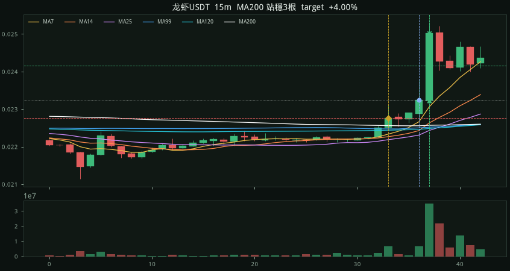
entry 0.1974 stop 0.1962 target 0.1998 exit 0.1998 target +2.00R 離 MA200 +0.21% 量比 1.7× 黏帶 0.70% MFE +2.43% MAE -0.51% 無停損 1h +0.41% 2h +1.57%
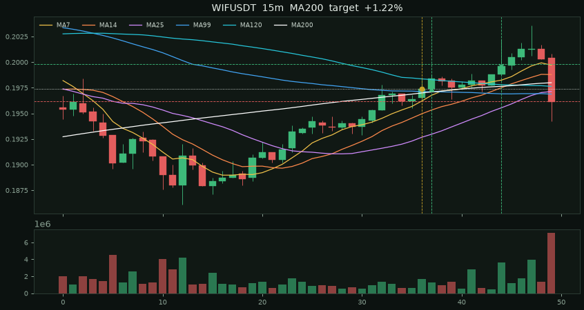
entry 0.008485 stop 0.008389 target 0.008677 exit 0.008389 stop -1.00R 離 MA200 +0.54% 量比 2.5× 黏帶 0.20% MFE +0.26% MAE -1.24% 無停損 1h -0.26% 2h +0.81%
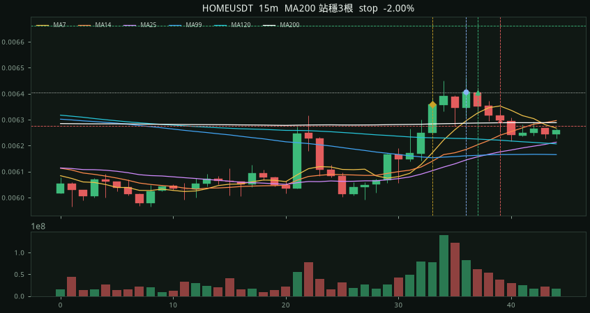
entry 0.09999 stop 0.0979902 target 0.10399 exit 0.10399 target +2.00R 離 MA200 +2.44% 量比 3.8× 黏帶 4.01% MFE +4.72% MAE -0.40% 無停損 1h +4.64% 2h +5.81%
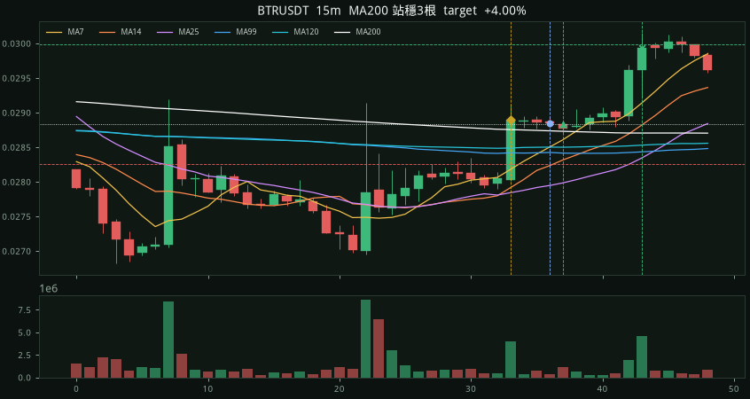
entry 2433.38 stop 2423.65 target 2452.85 exit 2423.65 stop -1.00R 離 MA200 +0.16% 量比 2.0× 黏帶 0.59% MFE +0.02% MAE -0.66% 無停損 1h -0.28% 2h +1.04%
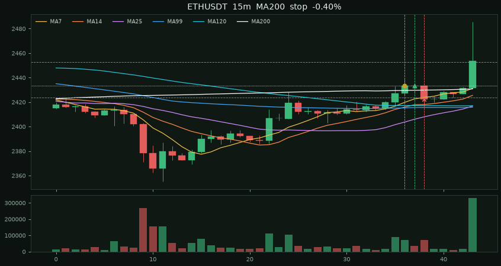
entry 89.76 stop 89.401 target 90.4781 exit 89.401 stop -1.00R 離 MA200 +0.07% 量比 4.2× 黏帶 0.73% MFE +0.21% MAE -0.57% 無停損 1h +0.10% 2h -0.20%
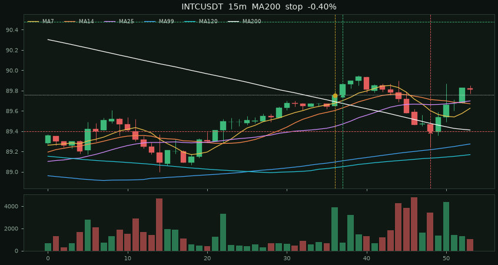
entry 18.67 stop 18.5953 target 18.8194 exit 18.5953 stop -1.00R 離 MA200 +0.33% 量比 7.8× 黏帶 1.44% MFE +0.32% MAE -0.64% 無停損 1h +0.11% 2h -0.32%
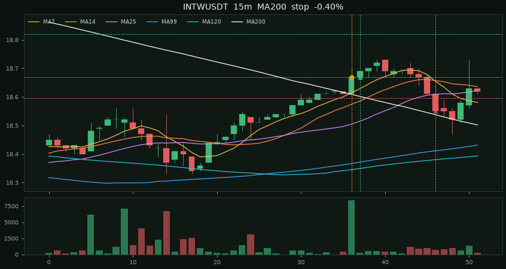
entry 0.002014 stop 0.001993 target 0.002056 exit 0.001993 stop -1.00R 離 MA200 +0.84% 量比 3.0× 黏帶 3.17% MFE +0.60% MAE -1.59% 無停損 1h -1.29% 2h -0.60%
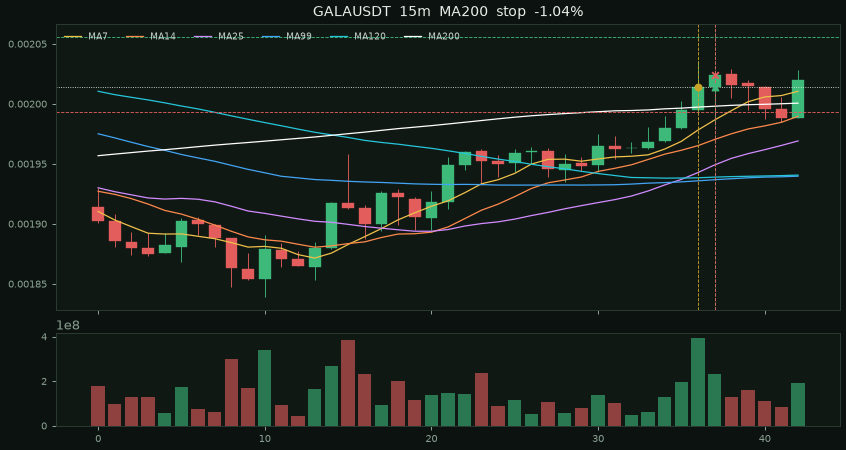
entry 0.007423 stop 0.007289 target 0.007691 exit 0.007289 stop -1.00R 離 MA200 +0.42% 量比 2.7× 黏帶 3.41% MFE +1.71% MAE -2.57% 無停損 1h +1.97% 2h +3.44%
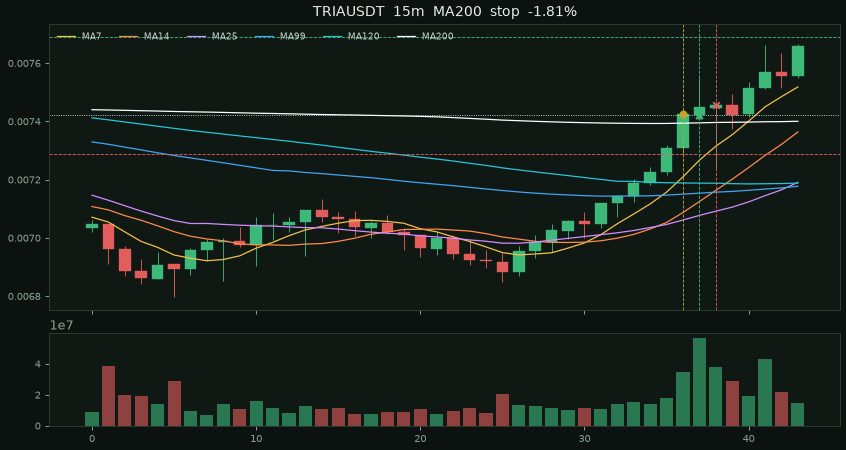
entry 87.97 stop 87.6181 target 88.6738 exit 88.18 time +0.60R 離 MA200 +0.21% 量比 2.6× 黏帶 0.83% MFE +0.59% MAE -0.34% 無停損 1h +0.16% 2h +0.07%
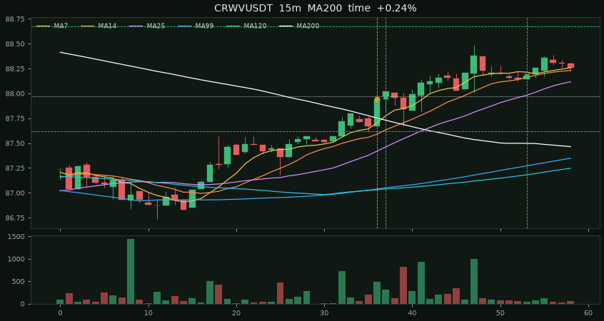
entry 0.19822 stop 0.19655 target 0.20156 exit 0.20156 target +2.00R 離 MA200 +0.25% 量比 2.4× 黏帶 0.91% MFE +1.76% MAE -0.83% 無停損 1h +0.78% 2h +0.30%
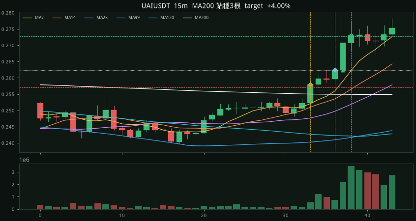
entry 862.99 stop 859.01 target 870.95 exit 866.39 time +0.85R 離 MA200 +0.23% 量比 3.9× 黏帶 0.73% MFE +0.67% MAE -0.17% 無停損 1h +0.03% 2h +0.46%
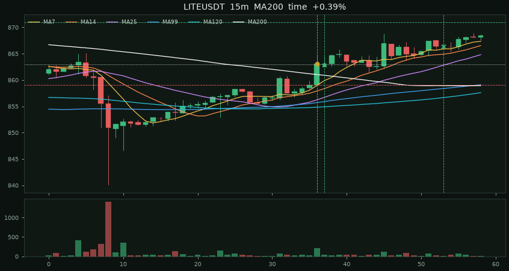
entry 0.03133 stop 0.0307034 target 0.0325832 exit 0.0325832 target +2.00R 離 MA200 +1.00% 量比 2.2× 黏帶 3.17% MFE +4.47% MAE -0.93% 無停損 1h +1.37% 2h +1.69%
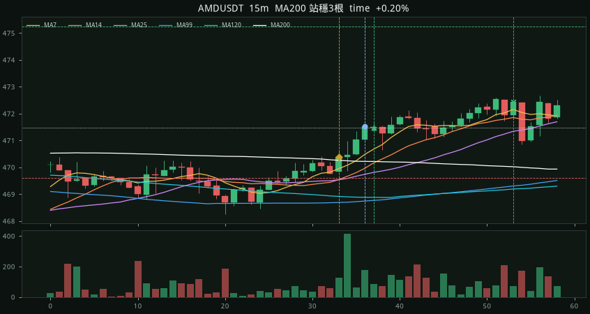
entry 483.24 stop 481.307 target 487.106 exit 486.27 time +1.57R 離 MA200 +0.09% 量比 9.1× 黏帶 0.09% MFE +0.65% MAE -0.01% 無停損 1h +0.41% 2h +0.43%
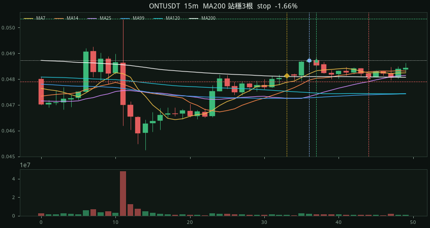
entry 0.04922 stop 0.0482356 target 0.0511888 exit 0.0482356 stop -1.00R 離 MA200 +1.02% 量比 7.7× 黏帶 1.64% MFE +0.69% MAE -3.17% 無停損 1h -2.58% 2h -0.43%
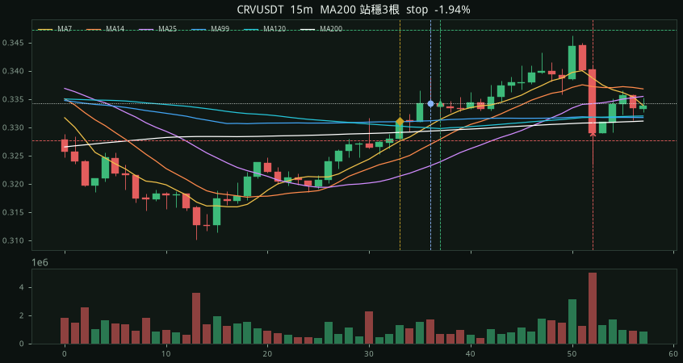
entry 0.397 stop 0.3947 target 0.4016 exit 0.4016 target +2.00R 離 MA200 +0.27% 量比 1.7× 黏帶 2.37% MFE +2.95% MAE -0.15% 無停損 1h +0.00% 2h +2.17%
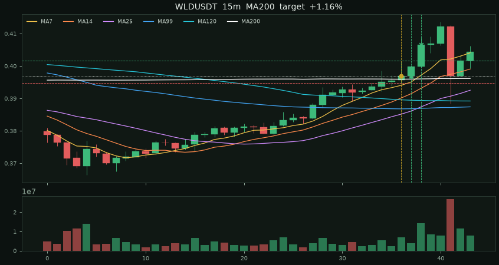
entry 0.04732 stop 0.04698 target 0.048 exit 0.04698 stop -1.00R 離 MA200 +0.53% 量比 2.4× 黏帶 1.01% MFE +1.23% MAE -1.56% 無停損 1h -0.74% 2h +1.29%
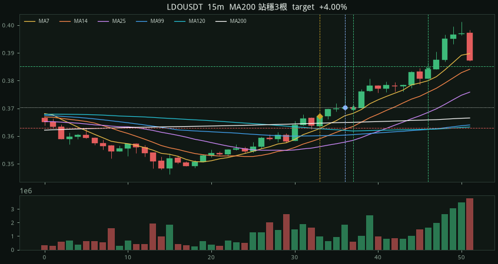
entry 0.02741 stop 0.02711 target 0.02801 exit 0.02711 stop -1.00R 離 MA200 +0.60% 量比 3.2× 黏帶 1.91% MFE +0.99% MAE -2.41% 無停損 1h -1.02% 2h +1.13%
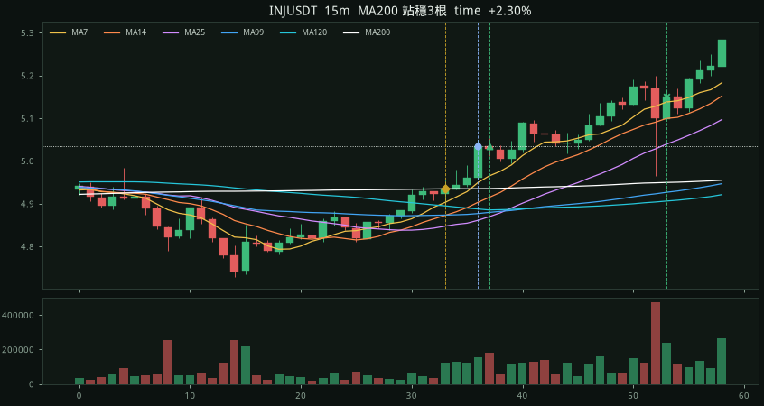
entry 1.3315 stop 1.3077 target 1.3791 exit 1.3262 time -0.22R 離 MA200 +1.07% 量比 1.9× 黏帶 2.26% MFE +2.58% MAE -1.28% 無停損 1h -0.61% 2h +0.80%
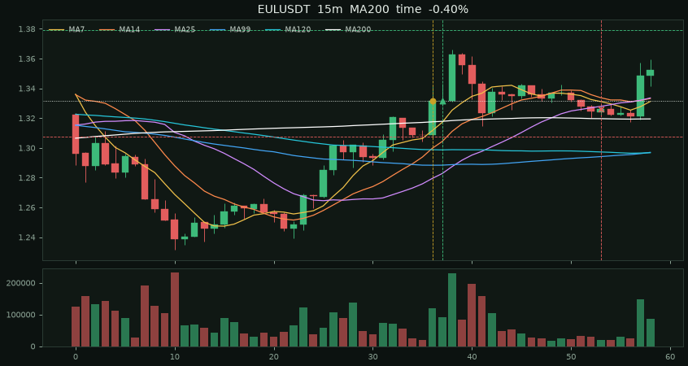
entry 0.02361 stop 0.02321 target 0.02441 exit 0.02321 stop -1.00R 離 MA200 +0.28% 量比 3.5× 黏帶 2.39% MFE +0.30% MAE -1.86% 無停損 1h -2.71% 2h -3.13%
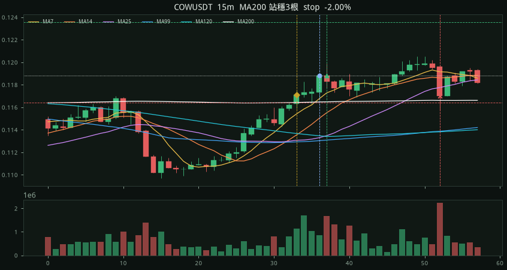
entry 120.19 stop 119.709 target 121.152 exit 119.709 stop -1.00R 離 MA200 +0.10% 量比 2.6× 黏帶 0.45% MFE +0.16% MAE -0.87% 無停損 1h -0.95% 2h -0.32%
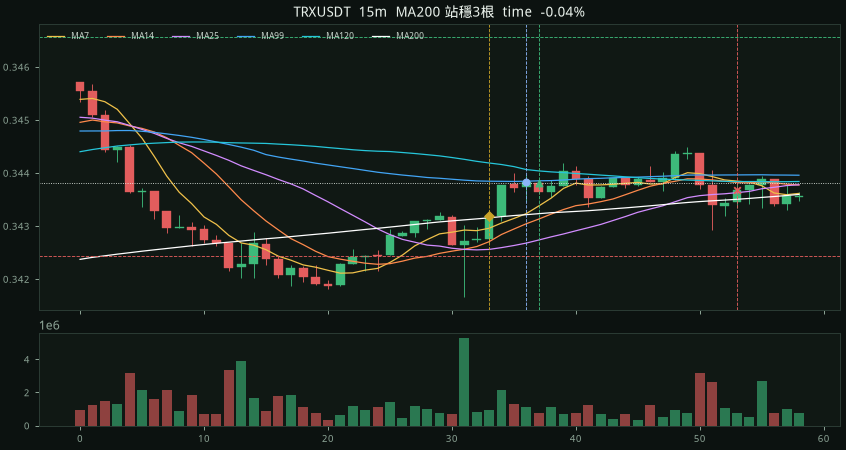
entry 22.99 stop 22.78 target 23.41 exit 22.78 stop -1.00R 離 MA200 +0.40% 量比 6.3× 黏帶 0.59% MFE +0.39% MAE -1.83% 無停損 1h -1.39% 2h -0.61%
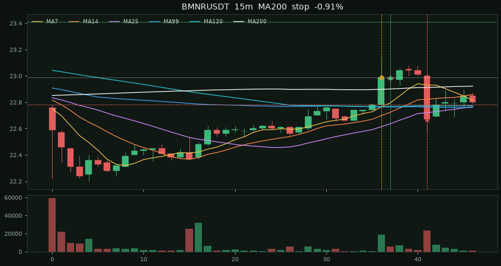
entry 7.968 stop 7.831 target 8.242 exit 7.831 stop -1.00R 離 MA200 +0.47% 量比 3.6× 黏帶 0.98% MFE +0.26% MAE -3.09% 無停損 1h -0.92% 2h -0.59%
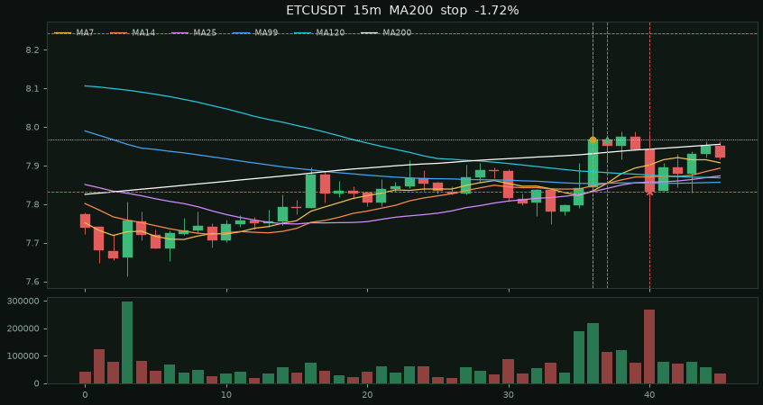
entry 0.07634 stop 0.07534 target 0.07834 exit 0.07534 stop -1.00R 離 MA200 +0.08% 量比 3.2× 黏帶 3.06% MFE +1.53% MAE -2.28% 無停損 1h +1.86% 2h +2.74%
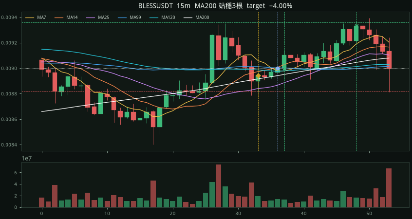
entry 0.6471 stop 0.6359 target 0.6695 exit 0.6359 stop -1.00R 離 MA200 +1.55% 量比 1.9× 黏帶 1.63% MFE +1.53% MAE -2.09% 無停損 1h +0.76% 2h +0.71%
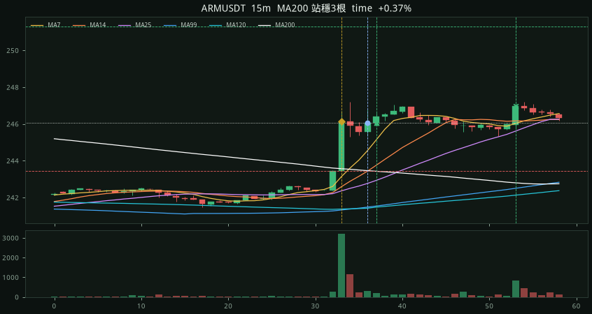
entry 0.0278 stop 0.02761 target 0.02818 exit 0.02761 stop -1.00R 離 MA200 +0.15% 量比 2.7× 黏帶 2.48% MFE +1.22% MAE -1.83% 無停損 1h +0.50% 2h +0.14%
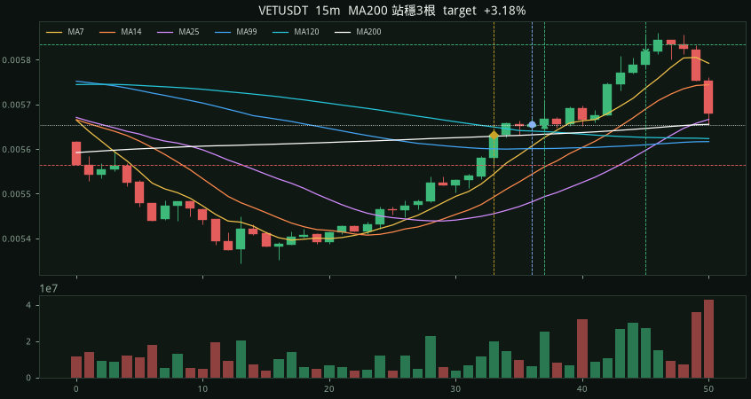
entry 1.495 stop 1.474 target 1.537 exit 1.474 stop -1.00R 離 MA200 +0.94% 量比 3.2× 黏帶 2.10% MFE +0.67% MAE -2.74% 無停損 1h -0.67% 2h +0.67%
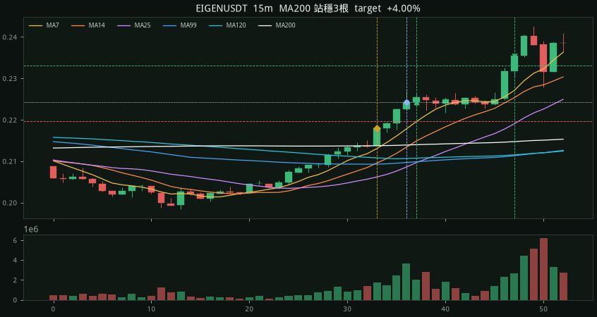
entry 0.4735 stop 0.4678 target 0.4849 exit 0.4678 stop -1.00R 離 MA200 +0.96% 量比 2.3× 黏帶 2.18% MFE +0.78% MAE -2.13% 無停損 1h +1.46% 2h +1.20%
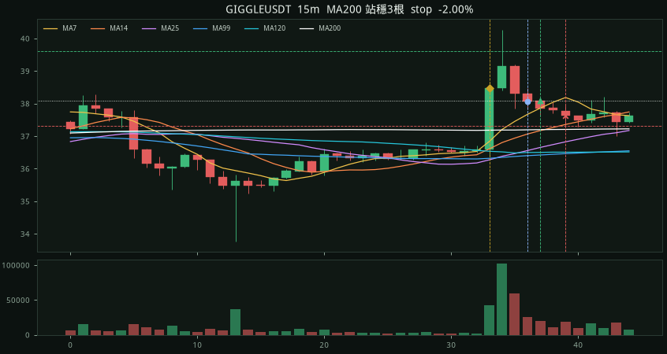
entry 0.0604 stop 0.05992 target 0.06136 exit 0.05992 stop -1.00R 離 MA200 +0.10% 量比 1.9× 黏帶 2.69% MFE +0.35% MAE -3.99% 無停損 1h -1.54% 2h -1.06%
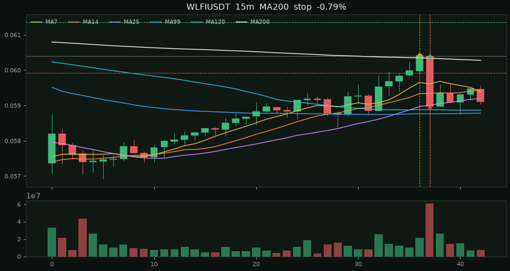
entry 766.85 stop 763.783 target 772.985 exit 766.01 time -0.27R 離 MA200 +0.08% 量比 1.7× 黏帶 0.04% MFE +0.01% MAE -0.14% 無停損 1h -0.11% 2h -0.10%
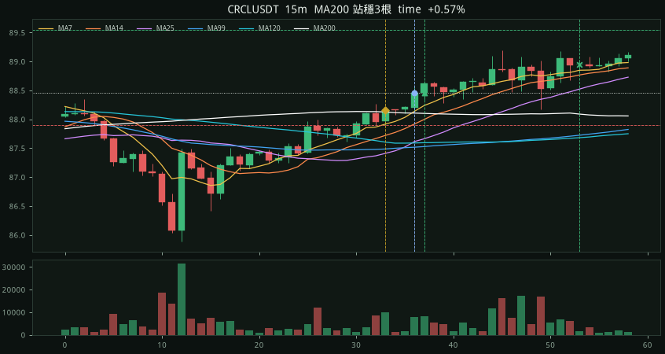
entry 0.384 stop 0.3784 target 0.3952 exit 0.3819 time -0.37R 離 MA200 +0.29% 量比 1.8× 黏帶 2.32% MFE +1.95% MAE -1.35% 無停損 1h +0.10% 2h +0.60%
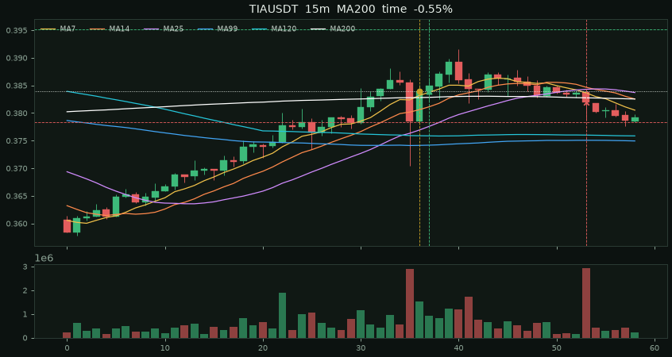
entry 0.10107 stop 0.09997 target 0.10327 exit 0.10327 target +2.00R 離 MA200 +0.81% 量比 1.7× 黏帶 1.46% MFE +2.80% MAE -0.41% 無停損 1h +1.21% 2h +1.44%
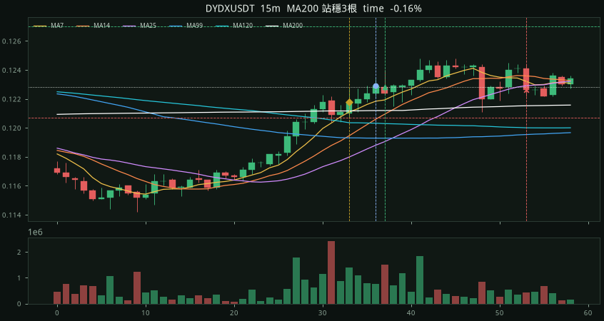
entry 0.3798 stop 0.3747 target 0.39 exit 0.39 target +2.00R 離 MA200 +0.50% 量比 1.8× 黏帶 3.17% MFE +3.00% MAE -0.66% 無停損 1h +2.79% 2h +1.90%
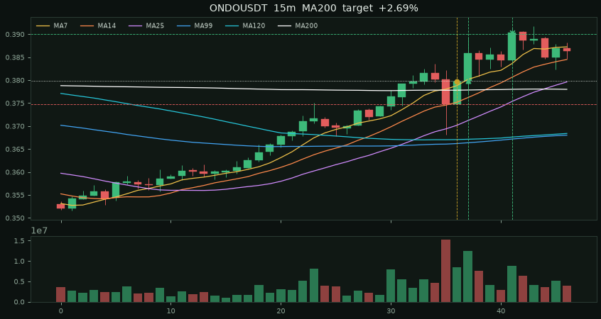
entry 0.01629 stop 0.01598 target 0.01691 exit 0.01598 stop -1.00R 離 MA200 +0.20% 量比 3.0× 黏帶 1.19% MFE +0.37% MAE -1.90% 無停損 1h -1.10% 2h -1.53%
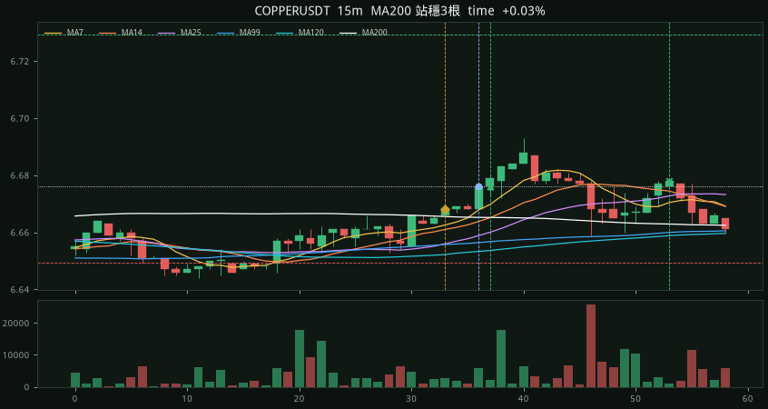
entry 0.007868 stop 0.007778 target 0.008048 exit 0.008048 target +2.00R 離 MA200 +0.61% 量比 2.0× 黏帶 3.07% MFE +2.89% MAE -0.31% 無停損 1h +0.67% 2h +3.55%
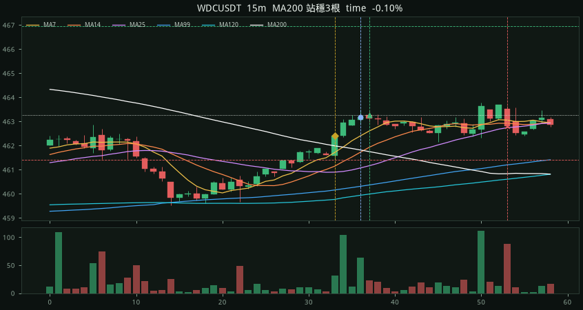
entry 282.15 stop 281.021 target 284.407 exit 281.021 stop -1.00R 離 MA200 +0.16% 量比 3.2× 黏帶 1.01% MFE +0.06% MAE -0.43% 無停損 1h -0.22% 2h -0.19%
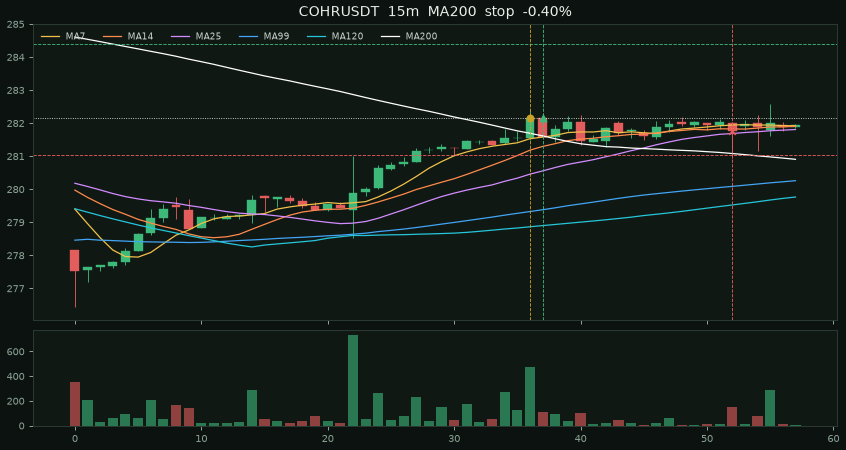
entry 0.022113 stop 0.021754 target 0.022831 exit 0.021966 time -0.41R 離 MA200 +0.27% 量比 2.0× 黏帶 1.62% MFE +0.52% MAE -0.96% 無停損 1h -0.43% 2h -0.70%
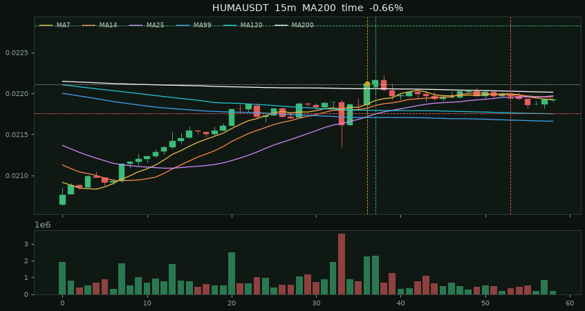
entry 0.004418 stop 0.004376 target 0.004502 exit 0.004376 stop -1.00R 離 MA200 +0.33% 量比 2.7× 黏帶 2.79% MFE +0.05% MAE -0.95% 無停損 1h -0.09% 2h -0.95%
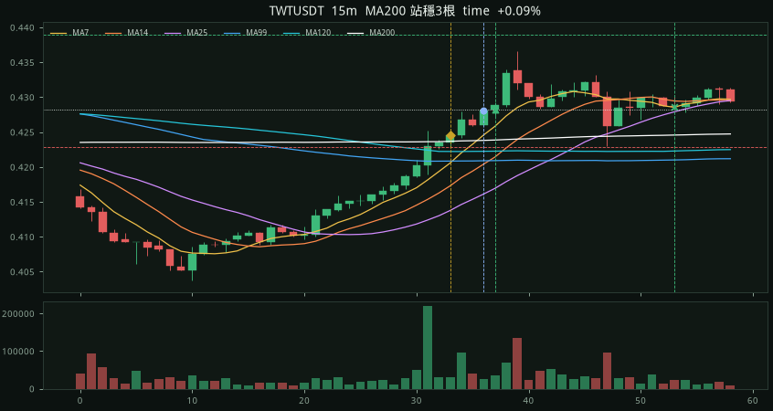
entry 1884.76 stop 1877.22 target 1899.84 exit 1886.49 time +0.23R 離 MA200 +0.10% 量比 1.9× 黏帶 0.08% MFE +0.52% MAE -0.03% 無停損 1h +0.11% 2h +0.09%
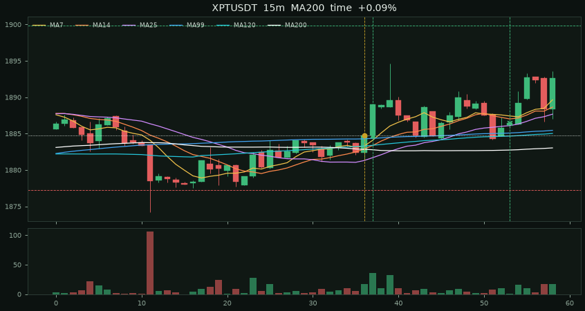
entry 0.12081 stop 0.118394 target 0.125642 exit 0.125642 target +2.00R 離 MA200 +0.44% 量比 5.5× 黏帶 0.26% MFE +5.36% MAE -1.05% 無停損 1h +2.33% 2h +1.56%
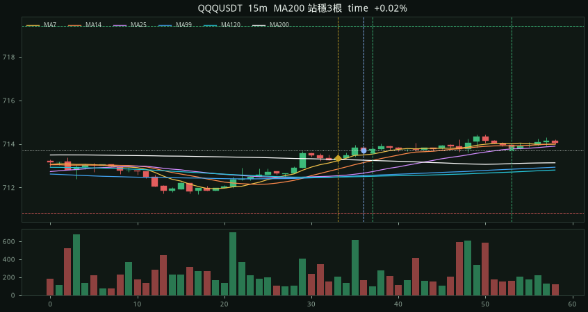
entry 0.004413 stop 0.004369 target 0.004501 exit 0.004369 stop -1.00R 離 MA200 +0.18% 量比 1.9× 黏帶 2.77% MFE +0.25% MAE -1.09% 無停損 1h -0.84% 2h +0.57%
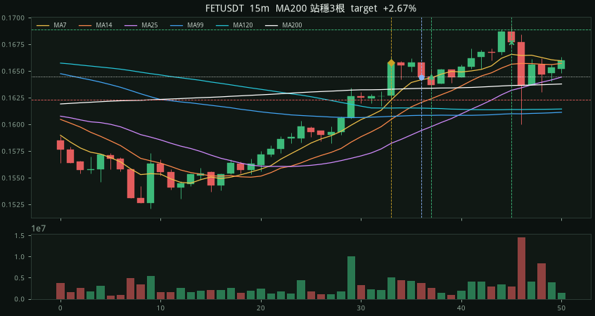
entry 199.63 stop 198.831 target 201.227 exit 200.05 time +0.53R 離 MA200 +0.35% 量比 6.9× 黏帶 0.53% MFE +0.37% MAE -0.05% 無停損 1h +0.28% 2h +0.31%
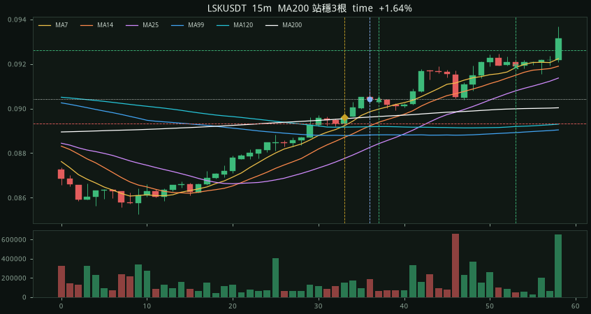
entry 0.01965 stop 0.019257 target 0.020436 exit 0.019257 stop -1.00R 離 MA200 +1.18% 量比 2.1× 黏帶 3.35% MFE +0.05% MAE -2.44% 無停損 1h -1.42% 2h -2.65%
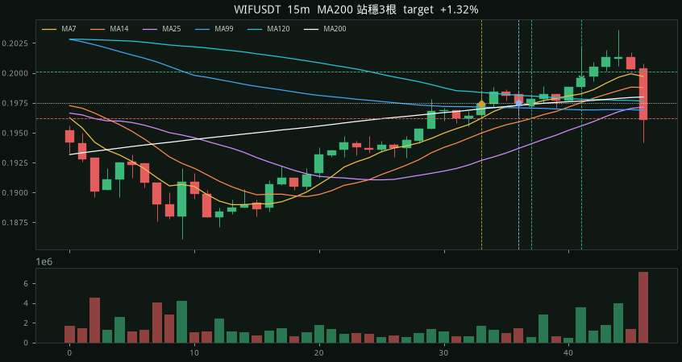
entry 22.99 stop 22.88 target 23.21 exit 23.17 time +1.64R 離 MA200 +0.28% 量比 2.5× 黏帶 0.76% MFE +0.83% MAE -0.43% 無停損 1h -0.09% 2h -0.22%
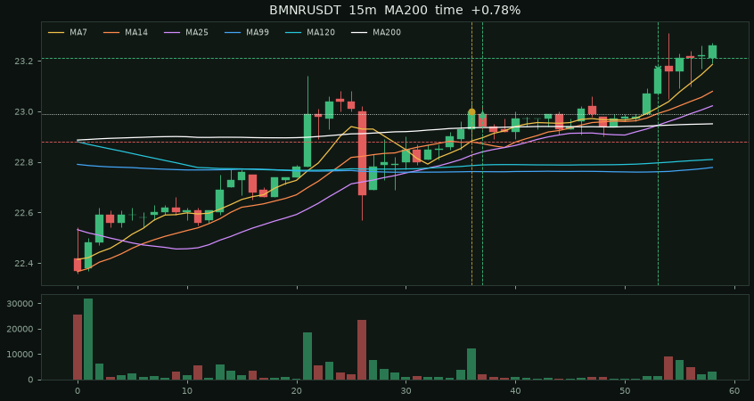
entry 0.00862 stop 0.0084476 target 0.0089648 exit 0.0084476 stop -1.00R 離 MA200 +0.31% 量比 2.3× 黏帶 0.84% MFE +0.00% MAE -2.05% 無停損 1h -2.24% 2h -0.64%
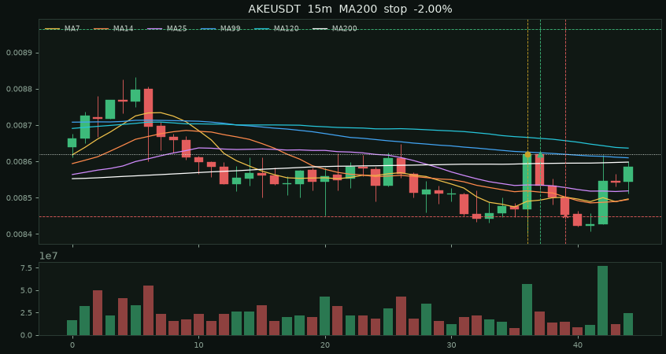
entry 120.39 stop 119.5 target 122.17 exit 120.7 time +0.35R 離 MA200 +0.34% 量比 2.3× 黏帶 0.52% MFE +0.88% MAE -0.28% 無停損 1h +0.17% 2h +0.47%
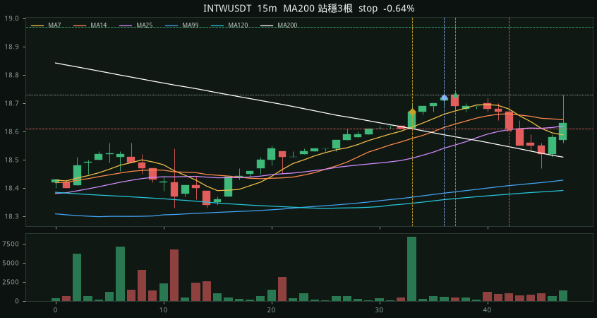
entry 441.41 stop 439.644 target 444.941 exit 439.644 stop -1.00R 離 MA200 +0.09% 量比 2.3× 黏帶 0.25% MFE +0.29% MAE -0.43% 無停損 1h -0.22% 2h -0.19%
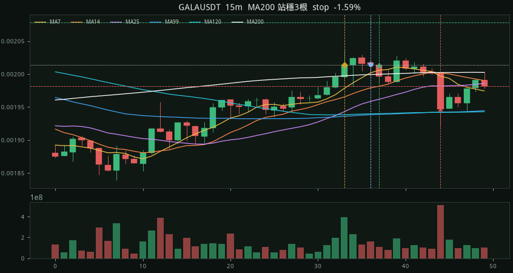
entry 0.2278 stop 0.2256 target 0.2322 exit 0.2256 stop -1.00R 離 MA200 +0.63% 量比 1.7× 黏帶 1.27% MFE +0.79% MAE -1.14% 無停損 1h -0.75% 2h -0.53%
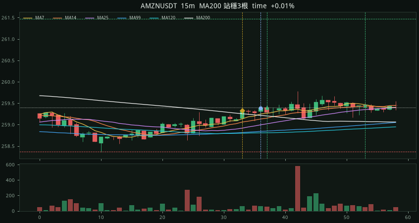
entry 7.633 stop 7.576 target 7.747 exit 7.576 stop -1.00R 離 MA200 +0.60% 量比 1.9× 黏帶 1.26% MFE +0.59% MAE -1.23% 無停損 1h +0.07% 2h -0.18%
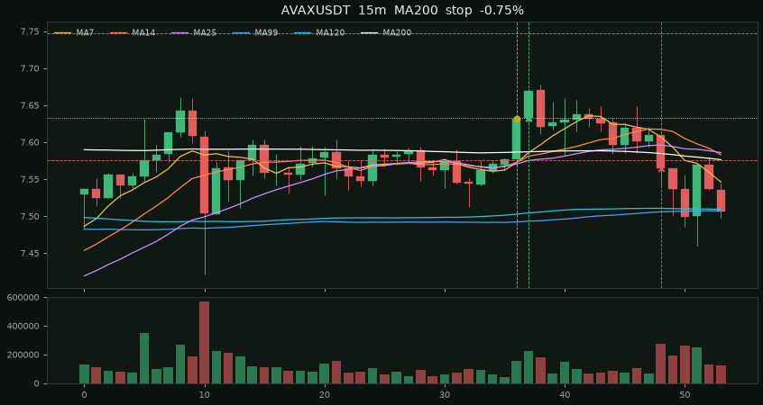
entry 0.04624 stop 0.0459 target 0.04692 exit 0.0459 stop -1.00R 離 MA200 +0.27% 量比 2.0× 黏帶 2.41% MFE +1.32% MAE -0.91% 無停損 1h -0.52% 2h -0.99%
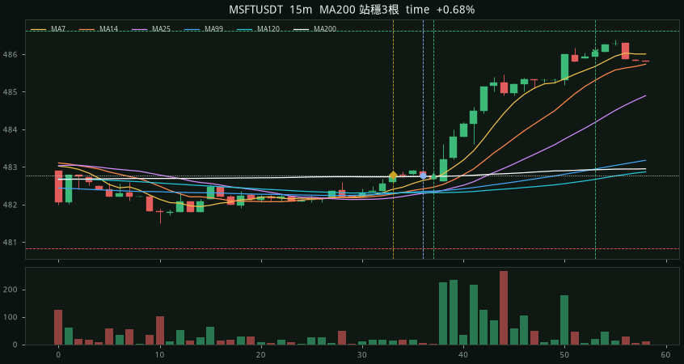
entry 0.02778 stop 0.02725 target 0.02884 exit 0.02725 stop -1.00R 離 MA200 +1.34% 量比 2.7× 黏帶 2.27% MFE +2.99% MAE -2.16% 無停損 1h +0.32% 2h -0.40%
entry 0.02818 stop 0.02782 target 0.0289 exit 0.02782 stop -1.00R 離 MA200 +0.83% 量比 2.8× 黏帶 2.28% MFE +0.78% MAE -1.42% 無停損 1h -0.39% 2h -0.92%
entry 8.034 stop 7.983 target 8.136 exit 7.983 stop -1.00R 離 MA200 +0.43% 量比 2.8× 黏帶 1.89% MFE +0.02% MAE -0.95% 無停損 1h -0.72% 2h -1.26%
entry 11.701 stop 11.629 target 11.845 exit 11.629 stop -1.00R 離 MA200 +0.25% 量比 1.9× 黏帶 1.70% MFE +0.32% MAE -1.13% 無停損 1h -1.12% 2h -1.81%
entry 0.005592 stop 0.005534 target 0.005708 exit 0.005534 stop -1.00R 離 MA200 +0.82% 量比 2.7× 黏帶 2.32% MFE +0.11% MAE -1.06% 無停損 1h -1.07% 2h -1.43%
entry 0.010713 stop 0.010625 target 0.010889 exit 0.010625 stop -1.00R 離 MA200 +0.26% 量比 1.8× 黏帶 1.76% MFE +0.31% MAE -1.08% 無停損 1h -0.56% 2h -0.96%
entry 39.22 stop 38.97 target 39.72 exit 38.97 stop -1.00R 離 MA200 +0.22% 量比 10.9× 黏帶 0.04% MFE +0.08% MAE -0.71% 無停損 1h -0.54% 2h -0.10%
entry 70.99 stop 70.706 target 71.5579 exit 71.5579 target +2.00R 離 MA200 +0.05% 量比 2.6× 黏帶 0.10% MFE +0.99% MAE -0.01% 無停損 1h +0.73% 2h +0.55%
entry 0.09393 stop 0.09349 target 0.09481 exit 0.09349 stop -1.00R 離 MA200 +0.05% 量比 2.7× 黏帶 1.70% MFE +0.78% MAE -0.90% 無停損 1h -1.58% 2h -1.17%
entry 0.5259 stop 0.516 target 0.5457 exit 0.516 stop -1.00R 離 MA200 +1.08% 量比 7.0× 黏帶 1.91% MFE +0.61% MAE -2.40% 無停損 1h -1.84% 2h -2.81%
entry 0.01285 stop 0.012593 target 0.013364 exit 0.012593 stop -1.00R 離 MA200 +0.53% 量比 2.1× 黏帶 2.90% MFE +0.19% MAE -2.02% 無停損 1h -2.43% 2h -2.95%
entry 442.97 stop 440.99 target 446.93 exit 440.99 stop -1.00R 離 MA200 +0.36% 量比 5.5× 黏帶 0.19% MFE +0.08% MAE -1.00% 無停損 1h -0.25% 2h -0.97%
entry 39.19 stop 38.85 target 39.87 exit 38.85 stop -1.00R 離 MA200 +0.16% 量比 4.1× 黏帶 0.02% MFE +0.13% MAE -0.92% 無停損 1h -0.41% 2h -0.15%
entry 47.68 stop 46.75 target 49.54 exit 46.75 stop -1.00R 離 MA200 +0.64% 量比 5.8× 黏帶 0.20% MFE +0.40% MAE -2.06% 無停損 1h -0.80% 2h -0.06%
entry 0.2328 stop 0.228144 target 0.242112 exit 0.242112 target +2.00R 離 MA200 +0.20% 量比 5.4× 黏帶 2.63% MFE +5.03% MAE -1.93% 無停損 1h +1.33% 2h +3.91%
entry 0.11248 stop 0.1112 target 0.11504 exit 0.1112 stop -1.00R 離 MA200 +0.20% 量比 2.1× 黏帶 3.74% MFE +0.88% MAE -3.09% 無停損 1h -4.98% 2h -5.20%
entry 0.23715 stop 0.23555 target 0.24035 exit 0.24035 target +2.00R 離 MA200 +0.26% 量比 2.1× 黏帶 2.05% MFE +2.49% MAE -0.46% 無停損 1h +1.04% 2h +4.77%
entry 0.009145 stop 0.0089621 target 0.0095108 exit 0.0089621 stop -1.00R 離 MA200 +1.53% 量比 2.1× 黏帶 0.50% MFE +0.43% MAE -2.11% 無停損 1h -0.97% 2h -0.19%
entry 1886.83 stop 1873.44 target 1913.61 exit 1888.35 time +0.11R 離 MA200 +0.23% 量比 2.6× 黏帶 0.10% MFE +0.42% MAE -0.42% 無停損 1h +0.10% 2h -0.10%
entry 0.007323 stop 0.007232 target 0.007505 exit 0.007505 target +2.00R 離 MA200 +0.87% 量比 1.8× 黏帶 1.79% MFE +2.83% MAE -0.20% 無停損 1h +0.52% 2h +2.55%
entry 0.008657 stop 0.00848386 target 0.00900328 exit 0.00848386 stop -1.00R 離 MA200 +0.45% 量比 4.5× 黏帶 0.60% MFE +0.00% MAE -2.06% 無停損 1h -0.91% 2h -0.39%
entry 0.02878 stop 0.02845 target 0.02944 exit 0.02944 target +2.00R 離 MA200 +0.16% 量比 2.5× 黏帶 0.74% MFE +5.87% MAE -0.17% 無停損 1h +0.83% 2h +0.80%
entry 0.13083 stop 0.12834 target 0.13581 exit 0.13075 time -0.03R 離 MA200 +0.76% 量比 3.0× 黏帶 1.35% MFE +3.74% MAE -1.32% 無停損 1h +0.10% 2h +0.09%
entry 22.92 stop 22.72 target 23.32 exit 22.77 time -0.75R 離 MA200 +0.12% 量比 1.7× 黏帶 0.32% MFE +1.61% MAE -0.65% 無停損 1h +0.26% 2h +0.09%
entry 0.02785 stop 0.0275 target 0.02855 exit 0.0275 stop -1.00R 離 MA200 +0.13% 量比 2.5× 黏帶 1.33% MFE +1.04% MAE -1.94% 無停損 1h +0.29% 2h +0.39%
entry 0.4438 stop 0.434924 target 0.461552 exit 0.434924 stop -1.00R 離 MA200 +0.53% 量比 3.4× 黏帶 1.77% MFE +0.09% MAE -2.12% 無停損 1h -1.13% 2h -2.55%
entry 2.411 stop 2.383 target 2.467 exit 2.383 stop -1.00R 離 MA200 +0.34% 量比 1.8× 黏帶 0.54% MFE +0.12% MAE -1.24% 無停損 1h -0.79% 2h -0.83%
entry 0.10761 stop 0.10711 target 0.10861 exit 0.10861 target +2.00R 離 MA200 +0.10% 量比 2.7× 黏帶 0.90% MFE +1.10% MAE -0.38% 無停損 1h -1.09% 2h -0.79%
entry 0.01629 stop 0.0159642 target 0.0169416 exit 0.0159642 stop -1.00R 離 MA200 +0.49% 量比 4.9× 黏帶 1.54% MFE +1.41% MAE -2.70% 無停損 1h -0.74% 2h -0.43%
entry 0.2032 stop 0.2004 target 0.2088 exit 0.2004 stop -1.00R 離 MA200 +0.35% 量比 1.9× 黏帶 3.48% MFE +1.87% MAE -1.77% 無停損 1h +0.59% 2h -1.23%
entry 0.13967 stop 0.136877 target 0.145257 exit 0.1396 time -0.03R 離 MA200 +0.75% 量比 12.6× 黏帶 0.94% MFE +1.28% MAE -1.00% 無停損 1h +0.11% 2h -0.39%
entry 0.010552 stop 0.010341 target 0.0109741 exit 0.010341 stop -1.00R 離 MA200 +0.29% 量比 1.8× 黏帶 0.52% MFE +2.56% MAE -2.34% 無停損 1h +1.82% 2h -0.83%
entry 0.0238 stop 0.023372 target 0.024656 exit 0.023372 stop -1.00R 離 MA200 +1.40% 量比 1.8× 黏帶 4.34% MFE +2.67% MAE -2.20% 無停損 1h -5.31% 2h -8.96%
entry 1.481 stop 1.458 target 1.527 exit 1.458 stop -1.00R 離 MA200 +0.22% 量比 4.0× 黏帶 0.52% MFE +0.34% MAE -1.76% 無停損 1h -0.47% 2h -1.55%
entry 0.05924 stop 0.0580552 target 0.0616096 exit 0.0580552 stop -1.00R 離 MA200 +0.09% 量比 5.6× 黏帶 0.99% MFE +0.47% MAE -2.92% 無停損 1h -0.52% 2h -1.10%
entry 52.14 stop 51.83 target 52.76 exit 51.83 stop -1.00R 離 MA200 +0.16% 量比 2.0× 黏帶 0.21% MFE +0.73% MAE -0.77% 無停損 1h -0.10% 2h +0.06%
entry 1.4971 stop 1.4804 target 1.5305 exit 1.4804 stop -1.00R 離 MA200 +0.32% 量比 1.7× 黏帶 0.26% MFE +0.04% MAE -1.51% 無停損 1h -2.79% 2h -1.20%
entry 0.0040778 stop 0.0040178 target 0.0041978 exit 0.0040178 stop -1.00R 離 MA200 +0.50% 量比 2.3× 黏帶 0.27% MFE +0.00% MAE -1.64% 無停損 1h -2.21% 2h -1.18%
entry 0.02735 stop 0.0269 target 0.02825 exit 0.0269 stop -1.00R 離 MA200 +1.10% 量比 1.9× 黏帶 0.61% MFE +0.07% MAE -1.72% 無停損 1h -2.05% 2h -0.37%
entry 0.4253 stop 0.4233 target 0.4293 exit 0.4233 stop -1.00R 離 MA200 +0.14% 量比 2.2× 黏帶 0.60% MFE +0.12% MAE -1.34% 無停損 1h -1.22% 2h -0.61%
entry 0.05181 stop 0.0507738 target 0.0538824 exit 0.0507738 stop -1.00R 離 MA200 +0.96% 量比 2.2× 黏帶 0.98% MFE +0.08% MAE -2.16% 無停損 1h -1.99% 2h -1.20%
entry 0.02779 stop 0.02733 target 0.02871 exit 0.02733 stop -1.00R 離 MA200 +0.67% 量比 6.1× 黏帶 0.79% MFE +0.14% MAE -2.37% 無停損 1h -1.87% 2h -1.19%
entry 0.06644 stop 0.06582 target 0.06768 exit 0.06582 stop -1.00R 離 MA200 +0.20% 量比 2.0× 黏帶 0.44% MFE +0.09% MAE -1.04% 無停損 1h -2.15% 2h -1.88%
entry 310 stop 308.76 target 312.48 exit 310.85 time +0.69R 離 MA200 +0.06% 量比 1.9× 黏帶 0.12% MFE +0.35% MAE -0.19% 無停損 1h +0.14% 2h +0.27%
entry 2.809 stop 2.797 target 2.833 exit 2.833 target +2.00R 離 MA200 +0.18% 量比 3.4× 黏帶 0.25% MFE +0.93% MAE -0.18% 無停損 1h +0.14% 2h +0.93%
entry 427.88 stop 424.08 target 435.48 exit 424.08 stop -1.00R 離 MA200 +0.29% 量比 2.6× 黏帶 0.48% MFE +0.18% MAE -1.02% 無停損 1h -1.21% 2h -0.67%
entry 310.15 stop 308.909 target 312.631 exit 311.1 time +0.77R 離 MA200 +0.11% 量比 3.6× 黏帶 0.12% MFE +0.33% MAE -0.04% 無停損 1h +0.22% 2h +0.26%
entry 40.99 stop 40.57 target 41.83 exit 40.91 time -0.19R 離 MA200 +0.26% 量比 2.1× 黏帶 0.62% MFE +0.63% MAE -0.83% 無停損 1h +0.00% 2h +0.24%
entry 0.04851 stop 0.04785 target 0.04983 exit 0.04879 time +0.42R 離 MA200 +0.22% 量比 5.6× 黏帶 0.76% MFE +1.09% MAE -0.93% 無停損 1h +0.39% 2h +0.29%
entry 2.405 stop 2.373 target 2.469 exit 2.436 time +0.97R 離 MA200 +0.63% 量比 3.5× 黏帶 0.90% MFE +2.00% MAE -0.87% 無停損 1h +0.21% 2h +1.00%
entry 0.04955 stop 0.04881 target 0.05103 exit 0.05103 target +2.00R 離 MA200 +0.51% 量比 3.1× 黏帶 1.67% MFE +3.55% MAE -0.69% 無停損 1h +2.54% 2h +1.27%
entry 18.891 stop 18.554 target 19.565 exit 18.735 time -0.46R 離 MA200 +0.84% 量比 2.2× 黏帶 1.23% MFE +1.31% MAE -1.23% 無停損 1h -0.32% 2h -0.14%
entry 0.004355 stop 0.004293 target 0.004479 exit 0.004479 target +2.00R 離 MA200 +0.46% 量比 3.2× 黏帶 0.84% MFE +3.17% MAE -0.48% 無停損 1h +3.03% 2h +2.78%
entry 0.2082 stop 0.2059 target 0.2128 exit 0.2059 stop -1.00R 離 MA200 +0.88% 量比 2.9× 黏帶 1.85% MFE +0.38% MAE -1.54% 無停損 1h -0.58% 2h -0.43%
entry 0.3751 stop 0.3693 target 0.3867 exit 0.3867 target +2.00R 離 MA200 +0.89% 量比 1.8× 黏帶 1.19% MFE +3.36% MAE -1.33% 無停損 1h +0.27% 2h +0.21%
entry 0.007812 stop 0.007732 target 0.007972 exit 0.007972 target +2.00R 離 MA200 +0.92% 量比 3.4× 黏帶 1.32% MFE +2.21% MAE -0.32% 無停損 1h +0.41% 2h +1.34%
entry 0.12974 stop 0.127145 target 0.13493 exit 0.13493 target +2.00R 離 MA200 +2.47% 量比 8.6× 黏帶 4.92% MFE +5.92% MAE -0.12% 無停損 1h +6.94% 2h +7.38%
entry 0.24026 stop 0.235455 target 0.24987 exit 0.235455 stop -1.00R 離 MA200 +1.12% 量比 2.5× 黏帶 1.79% MFE +0.25% MAE -2.44% 無停損 1h -3.13% 2h -2.83%
entry 0.01896 stop 0.01888 target 0.01912 exit 0.01912 target +2.00R 離 MA200 +0.26% 量比 2.0× 黏帶 1.14% MFE +0.90% MAE -0.05% 無停損 1h -0.37% 2h +0.37%
entry 5.761 stop 5.709 target 5.865 exit 5.709 stop -1.00R 離 MA200 +0.58% 量比 2.2× 黏帶 1.06% MFE +0.35% MAE -1.46% 無停損 1h -0.30% 2h +1.51%
entry 0.01248 stop 0.012336 target 0.012768 exit 0.012768 target +2.00R 離 MA200 +0.40% 量比 2.2× 黏帶 1.20% MFE +2.47% MAE -0.61% 無停損 1h +1.56% 2h +2.84%
entry 0.4541 stop 0.4506 target 0.4611 exit 0.4506 stop -1.00R 離 MA200 +0.14% 量比 2.0× 黏帶 1.96% MFE +0.57% MAE -0.79% 無停損 1h +0.46% 2h +1.94%
entry 0.02767 stop 0.02749 target 0.02803 exit 0.02749 stop -1.00R 離 MA200 +0.40% 量比 1.8× 黏帶 0.93% MFE +0.00% MAE -0.80% 無停損 1h -0.47% 2h +2.24%
entry 1889.27 stop 1881.71 target 1904.38 exit 1881.71 stop -1.00R 離 MA200 +0.27% 量比 7.3× 黏帶 0.06% MFE +0.06% MAE -0.47% 無停損 1h -0.21% 2h -0.12%
entry 120.16 stop 119.37 target 121.74 exit 119.37 stop -1.00R 離 MA200 +0.42% 量比 1.8× 黏帶 0.30% MFE +0.49% MAE -0.72% 無停損 1h -0.52% 2h +1.07%
entry 88.57 stop 87.7 target 90.31 exit 87.7 stop -1.00R 離 MA200 +0.86% 量比 1.8× 黏帶 0.41% MFE +0.32% MAE -1.33% 無停損 1h -0.70% 2h +0.52%
entry 0.06965 stop 0.06887 target 0.07121 exit 0.06887 stop -1.00R 離 MA200 +0.19% 量比 2.0× 黏帶 0.65% MFE +0.55% MAE -1.72% 無停損 1h -0.30% 2h -0.52%
entry 1.508 stop 1.4839 target 1.5562 exit 1.4839 stop -1.00R 離 MA200 +1.46% 量比 1.8× 黏帶 0.57% MFE +0.05% MAE -1.80% 無停損 1h +0.58% 2h -1.21%
entry 0.1994 stop 0.1961 target 0.206 exit 0.1961 stop -1.00R 離 MA200 +1.39% 量比 2.8× 黏帶 0.48% MFE +0.52% MAE -2.64% 無停損 1h +0.26% 2h -2.12%
entry 0.2242 stop 0.219716 target 0.233168 exit 0.219716 stop -1.00R 離 MA200 +0.31% 量比 2.4× 黏帶 0.54% MFE +1.52% MAE -2.10% 無停損 1h +0.89% 2h -1.25%
entry 275.45 stop 269.941 target 286.468 exit 274.22 time -0.22R 離 MA200 +0.56% 量比 4.2× 黏帶 0.71% MFE +3.85% MAE -1.62% 無停損 1h +2.94% 2h +0.08%
entry 7.876 stop 7.749 target 8.13 exit 7.749 stop -1.00R 離 MA200 +0.35% 量比 2.9× 黏帶 0.33% MFE +0.04% MAE -1.63% 無停損 1h +0.51% 2h -1.66%
entry 0.0927 stop 0.09124 target 0.09562 exit 0.09124 stop -1.00R 離 MA200 +0.87% 量比 2.1× 黏帶 0.42% MFE +0.02% MAE -1.62% 無停損 1h +0.57% 2h -2.00%
entry 0.09345 stop 0.09222 target 0.09591 exit 0.09222 stop -1.00R 離 MA200 +1.01% 量比 2.4× 黏帶 0.46% MFE +0.14% MAE -1.59% 無停損 1h +0.07% 2h -2.16%
entry 4.387 stop 4.315 target 4.531 exit 4.315 stop -1.00R 離 MA200 +0.97% 量比 1.8× 黏帶 3.03% MFE +0.36% MAE -1.78% 無停損 1h +1.23% 2h -1.71%
entry 0.9198 stop 0.9036 target 0.9522 exit 0.9036 stop -1.00R 離 MA200 +0.40% 量比 2.2× 黏帶 0.40% MFE +0.01% MAE -1.94% 無停損 1h +0.26% 2h -1.17%
entry 0.3313 stop 0.3282 target 0.3375 exit 0.3282 stop -1.00R 離 MA200 +0.25% 量比 1.8× 黏帶 0.43% MFE +0.00% MAE -1.00% 無停損 1h -0.12% 2h -1.03%
entry 7.575 stop 7.484 target 7.757 exit 7.484 stop -1.00R 離 MA200 +0.90% 量比 2.4× 黏帶 0.35% MFE +0.01% MAE -1.53% 無停損 1h +0.22% 2h -0.86%
entry 0.7671 stop 0.7564 target 0.7885 exit 0.7564 stop -1.00R 離 MA200 +0.50% 量比 2.4× 黏帶 0.43% MFE +0.05% MAE -1.39% 無停損 1h -0.25% 2h -1.90%
entry 0.07546 stop 0.07442 target 0.07754 exit 0.07442 stop -1.00R 離 MA200 +0.38% 量比 3.0× 黏帶 1.45% MFE +0.04% MAE -1.78% 無停損 1h +1.29% 2h -1.23%
entry 0.11024 stop 0.10839 target 0.11394 exit 0.10839 stop -1.00R 離 MA200 +0.33% 量比 3.1× 黏帶 1.10% MFE +0.04% MAE -1.72% 無停損 1h -0.10% 2h -2.13%
entry 0.0041315 stop 0.00404887 target 0.00429676 exit 0.00404887 stop -1.00R 離 MA200 +2.00% 量比 3.1× 黏帶 0.51% MFE +0.01% MAE -2.15% 無停損 1h +1.14% 2h -1.48%
entry 0.09987 stop 0.09819 target 0.10323 exit 0.09819 stop -1.00R 離 MA200 +0.47% 量比 1.9× 黏帶 1.27% MFE +0.07% MAE -1.80% 無停損 1h -0.37% 2h -1.85%
entry 0.04752 stop 0.04694 target 0.04868 exit 0.04694 stop -1.00R 離 MA200 +1.14% 量比 1.8× 黏帶 0.86% MFE +1.18% MAE -1.62% 無停損 1h +0.74% 2h -1.18%
entry 0.377 stop 0.3712 target 0.3886 exit 0.3712 stop -1.00R 離 MA200 +0.20% 量比 1.9× 黏帶 0.51% MFE +0.03% MAE -1.72% 無停損 1h +0.32% 2h -2.28%
entry 0.003246 stop 0.00318108 target 0.00337584 exit 0.00318108 stop -1.00R 離 MA200 +0.74% 量比 3.6× 黏帶 0.60% MFE +0.15% MAE -2.34% 無停損 1h +0.65% 2h -1.88%
entry 0.4269 stop 0.4232 target 0.4343 exit 0.4232 stop -1.00R 離 MA200 +0.57% 量比 2.4× 黏帶 0.80% MFE +0.12% MAE -0.91% 無停損 1h +0.56% 2h -0.98%
entry 4.146 stop 4.06308 target 4.31184 exit 4.06308 stop -1.00R 離 MA200 +0.91% 量比 3.1× 黏帶 0.56% MFE +1.98% MAE -2.46% 無停損 1h +1.59% 2h -1.42%
entry 0.02767 stop 0.02736 target 0.02829 exit 0.02736 stop -1.00R 離 MA200 +0.47% 量比 1.8× 黏帶 1.53% MFE +0.00% MAE -1.99% 無停損 1h -0.11% 2h -2.06%
entry 0.16199 stop 0.15875 target 0.16847 exit 0.15875 stop -1.00R 離 MA200 +0.72% 量比 2.4× 黏帶 3.23% MFE +1.46% MAE -2.36% 無停損 1h +0.88% 2h -1.13%
entry 0.008116 stop 0.008047 target 0.008254 exit 0.008047 stop -1.00R 離 MA200 +0.65% 量比 1.7× 黏帶 1.75% MFE +0.06% MAE -0.97% 無停損 1h -1.16% 2h -2.75%
entry 9.185e-05 stop 9.072e-05 target 9.411e-05 exit 9.072e-05 stop -1.00R 離 MA200 +0.56% 量比 2.2× 黏帶 0.43% MFE +1.97% MAE -2.53% 無停損 1h +1.39% 2h -1.14%
entry 80.11 stop 79.036 target 82.258 exit 79.036 stop -1.00R 離 MA200 +0.89% 量比 2.1× 黏帶 1.11% MFE +1.09% MAE -1.73% 無停損 1h +0.46% 2h -1.57%
entry 0.02336 stop 0.02302 target 0.02404 exit 0.02302 stop -1.00R 離 MA200 +1.32% 量比 1.8× 黏帶 0.29% MFE +1.50% MAE -3.98% 無停損 1h +0.09% 2h -2.23%
entry 188.47 stop 185.01 target 195.39 exit 185.01 stop -1.00R 離 MA200 +1.76% 量比 3.1× 黏帶 0.37% MFE +1.87% MAE -1.89% 無停損 1h +0.95% 2h -0.86%
entry 552.58 stop 550.37 target 557.001 exit 550.37 stop -1.00R 離 MA200 +0.10% 量比 1.9× 黏帶 0.19% MFE +0.02% MAE -0.43% 無停損 1h -0.24% 2h -0.00%
entry 108.03 stop 106.89 target 110.31 exit 106.89 stop -1.00R 離 MA200 +0.39% 量比 2.5× 黏帶 0.56% MFE +0.01% MAE -1.06% 無停損 1h +0.89% 2h -1.40%
entry 110.59 stop 109.14 target 113.49 exit 109.14 stop -1.00R 離 MA200 +0.46% 量比 1.8× 黏帶 0.89% MFE +0.04% MAE -1.84% 無停損 1h -1.15% 2h -5.50%
entry 0.4382 stop 0.43 target 0.4546 exit 0.43 stop -1.00R 離 MA200 +0.14% 量比 4.6× 黏帶 0.90% MFE +0.00% MAE -1.92% 無停損 1h -0.94% 2h -2.33%
entry 0.1833 stop 0.1802 target 0.1895 exit 0.1802 stop -1.00R 離 MA200 +0.64% 量比 2.2× 黏帶 1.78% MFE +1.36% MAE -4.31% 無停損 1h -3.06% 2h -0.98%
entry 0.01051 stop 0.010404 target 0.010722 exit 0.010404 stop -1.00R 離 MA200 +0.18% 量比 2.0× 黏帶 0.25% MFE +0.71% MAE -2.42% 無停損 1h -0.77% 2h -5.10%
entry 0.06787 stop 0.0665126 target 0.0705848 exit 0.0665126 stop -1.00R 離 MA200 +0.36% 量比 3.0× 黏帶 2.39% MFE +0.03% MAE -2.48% 無停損 1h -4.07% 2h -2.76%
entry 1.58 stop 1.568 target 1.604 exit 1.568 stop -1.00R 離 MA200 +0.21% 量比 3.0× 黏帶 0.60% MFE +0.19% MAE -2.28% 無停損 1h -1.39% 2h -0.38%
entry 0.02429 stop 0.0238042 target 0.0252616 exit 0.0238042 stop -1.00R 離 MA200 +1.98% 量比 6.7× 黏帶 0.36% MFE +0.25% MAE -2.39% 無停損 1h -2.10% 2h -1.98%
entry 0.02179 stop 0.021685 target 0.022 exit 0.021685 stop -1.00R 離 MA200 +0.20% 量比 8.0× 黏帶 0.36% MFE +0.02% MAE -0.73% 無停損 1h -0.77% 2h -0.43%
entry 260.01 stop 258.08 target 263.87 exit 262.15 time +1.11R 離 MA200 +0.44% 量比 7.3× 黏帶 0.05% MFE +1.36% MAE -0.32% 無停損 1h +0.86% 2h +1.06%
entry 346.27 stop 342.72 target 353.37 exit 348.8 time +0.71R 離 MA200 +0.56% 量比 12.6× 黏帶 0.02% MFE +1.63% MAE -0.06% 無停損 1h +1.09% 2h +1.43%
entry 118.48 stop 116.67 target 122.1 exit 118.93 time +0.25R 離 MA200 +1.14% 量比 5.0× 黏帶 1.25% MFE +1.77% MAE -1.16% 無停損 1h +1.35% 2h +1.36%
entry 136.48 stop 133.75 target 141.939 exit 133.75 stop -1.00R 離 MA200 +1.11% 量比 14.8× 黏帶 0.05% MFE +0.31% MAE -2.48% 無停損 1h -0.12% 2h +0.36%
entry 0.02969 stop 0.02937 target 0.03033 exit 0.02937 stop -1.00R 離 MA200 +0.99% 量比 1.8× 黏帶 0.95% MFE +0.40% MAE -1.11% 無停損 1h -1.11% 2h -1.75%
entry 426.77 stop 420.99 target 438.33 exit 438.33 target +2.00R 離 MA200 +0.27% 量比 2.3× 黏帶 0.72% MFE +4.73% MAE -0.62% 無停損 1h -0.07% 2h +2.41%
entry 0.008649 stop 0.008534 target 0.008879 exit 0.008879 target +2.00R 離 MA200 +0.42% 量比 2.0× 黏帶 0.49% MFE +2.79% MAE -1.05% 無停損 1h -0.36% 2h +0.84%
entry 0.04967 stop 0.04877 target 0.05147 exit 0.04877 stop -1.00R 離 MA200 +1.53% 量比 2.3× 黏帶 0.18% MFE +0.44% MAE -2.03% 無停損 1h -1.57% 2h -2.86%
entry 0.005456 stop 0.005396 target 0.005576 exit 0.005461 time +0.08R 離 MA200 +0.28% 量比 2.5× 黏帶 0.35% MFE +1.06% MAE -1.01% 無停損 1h +0.33% 2h +0.00%
entry 0.12614 stop 0.12374 target 0.13094 exit 0.12374 stop -1.00R 離 MA200 +0.86% 量比 5.9× 黏帶 0.50% MFE +0.60% MAE -2.65% 無停損 1h +0.14% 2h -1.19%
entry 69.08 stop 68.8037 target 69.6326 exit 69.6326 target +2.00R 離 MA200 +0.14% 量比 2.6× 黏帶 0.09% MFE +1.11% MAE -0.07% 無停損 1h +0.38% 2h +0.58%
entry 0.08883 stop 0.08811 target 0.09027 exit 0.09027 target +2.00R 離 MA200 +0.67% 量比 1.7× 黏帶 0.48% MFE +1.70% MAE -0.36% 無停損 1h +1.11% 2h +0.60%
entry 0.012658 stop 0.0124048 target 0.0131643 exit 0.0124048 stop -1.00R 離 MA200 +1.51% 量比 7.4× 黏帶 0.42% MFE +0.14% MAE -2.43% 無停損 1h -0.97% 2h -0.62%
entry 0.1796 stop 0.176008 target 0.186784 exit 0.186784 target +2.00R 離 MA200 +0.58% 量比 1.9× 黏帶 0.52% MFE +4.06% MAE -0.67% 無停損 1h +1.73% 2h +0.56%
entry 0.00323 stop 0.003201 target 0.003288 exit 0.003201 stop -1.00R 離 MA200 +0.47% 量比 2.8× 黏帶 0.82% MFE +0.00% MAE -0.93% 無停損 1h +1.05% 2h +3.50%
entry 0.019 stop 0.01885 target 0.0193 exit 0.0193 target +2.00R 離 MA200 +0.35% 量比 4.8× 黏帶 0.72% MFE +1.84% MAE -0.53% 無停損 1h +0.84% 2h +2.32%
entry 0.5106 stop 0.5074 target 0.517 exit 0.5074 stop -1.00R 離 MA200 +0.05% 量比 2.2× 黏帶 0.41% MFE +0.00% MAE -0.63% 無停損 1h +0.27% 2h +1.49%
entry 0.06721 stop 0.06613 target 0.06937 exit 0.06937 target +2.00R 離 MA200 +0.41% 量比 5.6× 黏帶 0.84% MFE +3.96% MAE +0.00% 無停損 1h +6.09% 2h +7.04%
entry 0.011934 stop 0.011794 target 0.012214 exit 0.012007 time +0.52R 離 MA200 +0.12% 量比 2.3× 黏帶 0.74% MFE +1.29% MAE -1.02% 無停損 1h -0.69% 2h -0.33%
entry 0.01081 stop 0.0105938 target 0.0112424 exit 0.0105938 stop -1.00R 離 MA200 +1.36% 量比 7.6× 黏帶 1.44% MFE +0.09% MAE -2.04% 無停損 1h -1.11% 2h -0.56%
entry 1.5087 stop 1.4817 target 1.5627 exit 1.5136 time +0.18R 離 MA200 +1.36% 量比 2.5× 黏帶 0.31% MFE +2.80% MAE -0.86% 無停損 1h +0.05% 2h +0.86%
entry 0.2243 stop 0.2216 target 0.2297 exit 0.2254 time +0.41R 離 MA200 +0.97% 量比 2.2× 黏帶 0.59% MFE +2.10% MAE -0.62% 無停損 1h -0.09% 2h +0.98%
entry 273.91 stop 270.45 target 280.83 exit 280.83 target +2.00R 離 MA200 +0.47% 量比 2.9× 黏帶 0.31% MFE +2.95% MAE -0.15% 無停損 1h +0.50% 2h +1.58%
entry 841.51 stop 826.86 target 870.81 exit 848.07 time +0.45R 離 MA200 +1.58% 量比 2.4× 黏帶 1.14% MFE +2.89% MAE -1.46% 無停損 1h -0.82% 2h +1.48%
entry 0.0040968 stop 0.0040223 target 0.0042458 exit 0.0042458 target +2.00R 離 MA200 +1.12% 量比 2.7× 黏帶 0.35% MFE +4.78% MAE -0.57% 無停損 1h +0.14% 2h +2.38%
entry 0.04728 stop 0.04687 target 0.0481 exit 0.0481 target +2.00R 離 MA200 +0.52% 量比 1.8× 黏帶 0.54% MFE +1.82% MAE -0.57% 無停損 1h -0.02% 2h +1.10%
entry 0.5827 stop 0.5741 target 0.5999 exit 0.5999 target +2.00R 離 MA200 +0.14% 量比 2.6× 黏帶 0.87% MFE +4.15% MAE -1.17% 無停損 1h +0.41% 2h +1.92%
entry 0.01379 stop 0.01353 target 0.01431 exit 0.01353 stop -1.00R 離 MA200 +1.21% 量比 5.3× 黏帶 1.64% MFE +0.73% MAE -1.96% 無停損 1h -2.03% 2h -1.81%
entry 7.85 stop 7.798 target 7.954 exit 7.798 stop -1.00R 離 MA200 +0.45% 量比 2.0× 黏帶 0.60% MFE +0.34% MAE -0.68% 無停損 1h -0.43% 2h +1.36%
entry 0.05131 stop 0.05057 target 0.05279 exit 0.05057 stop -1.00R 離 MA200 +0.55% 量比 2.5× 黏帶 1.40% MFE +0.33% MAE -1.52% 無停損 1h +0.06% 2h +0.72%
entry 0.008065 stop 0.007972 target 0.008251 exit 0.007972 stop -1.00R 離 MA200 +0.20% 量比 3.3× 黏帶 0.58% MFE +0.12% MAE -1.18% 無停損 1h -1.82% 2h -0.10%
entry 79.694 stop 79.256 target 80.57 exit 79.256 stop -1.00R 離 MA200 +0.23% 量比 2.1× 黏帶 0.56% MFE +0.28% MAE -0.74% 無停損 1h +0.14% 2h +1.34%
entry 0.2317 stop 0.22723 target 0.24064 exit 0.22723 stop -1.00R 離 MA200 +0.39% 量比 2.8× 黏帶 3.22% MFE +1.04% MAE -1.94% 無停損 1h -2.24% 2h -2.05%
entry 0.06949 stop 0.06904 target 0.07039 exit 0.06904 stop -1.00R 離 MA200 +0.32% 量比 2.4× 黏帶 0.30% MFE +0.13% MAE -1.57% 無停損 1h -1.97% 2h -1.08%
entry 88.4 stop 87.91 target 89.38 exit 89.38 target +2.00R 離 MA200 +0.22% 量比 2.4× 黏帶 0.10% MFE +1.65% MAE -0.29% 無停損 1h +1.63% 2h +1.06%
entry 28.62 stop 28.4 target 29.06 exit 28.4 stop -1.00R 離 MA200 +0.28% 量比 5.7× 黏帶 1.23% MFE +0.00% MAE -2.45% 無停損 1h -1.05% 2h -1.82%
entry 0.4245 stop 0.422 target 0.4295 exit 0.4295 target +2.00R 離 MA200 +0.28% 量比 2.4× 黏帶 0.41% MFE +1.22% MAE -0.24% 無停損 1h +0.16% 2h +0.07%
entry 52.77 stop 52.06 target 54.19 exit 52.27 time -0.70R 離 MA200 +1.31% 量比 2.8× 黏帶 0.18% MFE +0.42% MAE -1.33% 無停損 1h -0.57% 2h -0.83%
entry 0.09291 stop 0.0910518 target 0.0966264 exit 0.09211 time -0.43R 離 MA200 +1.46% 量比 3.3× 黏帶 0.63% MFE +0.19% MAE -1.49% 無停損 1h -0.53% 2h -1.22%
entry 0.09387 stop 0.09216 target 0.09729 exit 0.09435 time +0.28R 離 MA200 +1.68% 量比 2.6× 黏帶 0.23% MFE +1.58% MAE -1.00% 無停損 1h +0.68% 2h -0.03%
entry 18.828 stop 18.517 target 19.45 exit 18.687 time -0.45R 離 MA200 +0.35% 量比 2.7× 黏帶 0.68% MFE +1.64% MAE -1.14% 無停損 1h -0.57% 2h -0.35%
entry 136.12 stop 133.92 target 140.52 exit 133.92 stop -1.00R 離 MA200 +1.12% 量比 2.1× 黏帶 2.09% MFE +0.20% MAE -2.01% 無停損 1h -6.22% 2h -5.14%
entry 0.9939 stop 0.9747 target 1.0323 exit 0.9747 stop -1.00R 離 MA200 +1.15% 量比 2.8× 黏帶 0.57% MFE +0.11% MAE -2.50% 無停損 1h -1.66% 2h -1.88%
entry 0.9216 stop 0.903168 target 0.958464 exit 0.91 time -0.63R 離 MA200 +1.24% 量比 3.0× 黏帶 0.44% MFE +0.28% MAE -1.58% 無停損 1h -1.01% 2h -1.09%
entry 5.567 stop 5.45566 target 5.78968 exit 5.45566 stop -1.00R 離 MA200 +1.66% 量比 3.5× 黏帶 0.87% MFE +0.34% MAE -2.34% 無停損 1h -1.54% 2h -1.99%
entry 0.771 stop 0.75558 target 0.80184 exit 0.75558 stop -1.00R 離 MA200 +1.53% 量比 3.4× 黏帶 0.36% MFE +0.12% MAE -2.30% 無停損 1h -0.77% 2h -1.27%
entry 2.002 stop 1.96196 target 2.08208 exit 1.964 time -0.95R 離 MA200 +2.46% 量比 3.3× 黏帶 1.48% MFE +0.30% MAE -2.00% 無停損 1h -0.65% 2h -1.20%
entry 0.001963 stop 0.001926 target 0.002037 exit 0.001937 time -0.70R 離 MA200 +1.59% 量比 2.3× 黏帶 0.87% MFE +1.38% MAE -1.78% 無停損 1h +0.25% 2h +0.41%
entry 0.6223 stop 0.609854 target 0.647192 exit 0.609854 stop -1.00R 離 MA200 +0.06% 量比 2.3× 黏帶 1.34% MFE +0.16% MAE -2.23% 無停損 1h -1.29% 2h -1.27%
entry 0.8328 stop 0.816144 target 0.866112 exit 0.816144 stop -1.00R 離 MA200 +1.79% 量比 3.3× 黏帶 0.51% MFE +0.20% MAE -2.05% 無停損 1h -1.10% 2h -1.85%
entry 0.3856 stop 0.377888 target 0.401024 exit 0.377888 stop -1.00R 離 MA200 +1.11% 量比 2.6× 黏帶 1.14% MFE +0.47% MAE -2.18% 無停損 1h -1.92% 2h -1.63%
entry 0.00143 stop 0.001412 target 0.001466 exit 0.001421 time -0.50R 離 MA200 +0.94% 量比 3.1× 黏帶 0.63% MFE +0.42% MAE -1.05% 無停損 1h -0.42% 2h -0.91%
entry 0.09976 stop 0.0977648 target 0.10375 exit 0.0977648 stop -1.00R 離 MA200 +0.58% 量比 2.9× 黏帶 0.60% MFE +0.31% MAE -2.15% 無停損 1h -1.52% 2h -1.56%
entry 1.806 stop 1.76988 target 1.87824 exit 1.76988 stop -1.00R 離 MA200 +1.13% 量比 4.0× 黏帶 1.10% MFE +0.42% MAE -2.03% 無停損 1h -1.43% 2h -1.33%
entry 0.01878 stop 0.01845 target 0.01944 exit 0.01921 time +1.30R 離 MA200 +0.36% 量比 2.1× 黏帶 1.19% MFE +3.19% MAE -0.69% 無停損 1h +0.16% 2h +1.06%
entry 0.7096 stop 0.6998 target 0.7292 exit 0.6998 stop -1.00R 離 MA200 +0.68% 量比 1.8× 黏帶 0.42% MFE +0.18% MAE -1.47% 無停損 1h -1.06% 2h -1.48%
entry 0.02784 stop 0.02729 target 0.02894 exit 0.02729 stop -1.00R 離 MA200 +1.28% 量比 1.9× 黏帶 0.62% MFE +0.50% MAE -1.98% 無停損 1h -1.04% 2h +0.11%
entry 0.2263 stop 0.221774 target 0.235352 exit 0.221774 stop -1.00R 離 MA200 +1.42% 量比 2.0× 黏帶 1.22% MFE +0.44% MAE -2.08% 無停損 1h -0.93% 2h -0.93%
entry 9.252e-05 stop 9.06696e-05 target 9.62208e-05 exit 9.088e-05 time -0.89R 離 MA200 +1.59% 量比 3.1× 黏帶 0.51% MFE +0.57% MAE -1.83% 無停損 1h -0.06% 2h -1.29%
entry 0.05068 stop 0.04996 target 0.05212 exit 0.05089 time +0.29R 離 MA200 +0.80% 量比 2.8× 黏帶 0.73% MFE +1.12% MAE -0.41% 無停損 1h +0.51% 2h -0.12%
entry 2.517 stop 2.46666 target 2.61768 exit 2.46666 stop -1.00R 離 MA200 +0.22% 量比 2.5× 黏帶 1.70% MFE +0.12% MAE -2.11% 無停損 1h -2.11% 2h -3.14%
entry 17.107 stop 16.7649 target 17.7913 exit 16.7649 stop -1.00R 離 MA200 +1.66% 量比 2.9× 黏帶 0.10% MFE +0.09% MAE -2.10% 無停損 1h -2.37% 2h -0.52%
entry 0.10009 stop 0.0980882 target 0.104094 exit 0.0980882 stop -1.00R 離 MA200 +1.30% 量比 2.5× 黏帶 0.69% MFE +0.37% MAE -3.58% 無停損 1h -1.18% 2h -2.21%
entry 0.0585 stop 0.05775 target 0.06 exit 0.05775 stop -1.00R 離 MA200 +0.11% 量比 2.2× 黏帶 0.47% MFE +0.94% MAE -1.76% 無停損 1h +0.09% 2h -0.12%
entry 0.8551 stop 0.8422 target 0.8809 exit 0.8472 time -0.61R 離 MA200 +0.93% 量比 2.8× 黏帶 0.44% MFE +0.18% MAE -1.44% 無停損 1h -0.77% 2h -0.33%
entry 185.18 stop 182.19 target 191.16 exit 184.64 time -0.18R 離 MA200 +0.31% 量比 5.3× 黏帶 0.29% MFE +0.33% MAE -0.80% 無停損 1h -0.37% 2h -0.68%
entry 0.004325 stop 0.004262 target 0.004451 exit 0.004262 stop -1.00R 離 MA200 +0.27% 量比 2.3× 黏帶 1.52% MFE +0.23% MAE -1.50% 無停損 1h -1.11% 2h -0.35%
entry 1.493 stop 1.476 target 1.527 exit 1.476 stop -1.00R 離 MA200 +0.89% 量比 2.6× 黏帶 0.53% MFE +0.00% MAE -1.21% 無停損 1h -0.80% 2h -0.94%
entry 0.23382 stop 0.229144 target 0.243173 exit 0.243173 target +2.00R 離 MA200 +2.46% 量比 4.6× 黏帶 2.82% MFE +7.19% MAE -0.76% 無停損 1h +2.64% 2h +9.69%
entry 0.009078 stop 0.008953 target 0.009328 exit 0.008953 stop -1.00R 離 MA200 +0.87% 量比 2.0× 黏帶 0.37% MFE +0.52% MAE -2.43% 無停損 1h -3.34% 2h -2.65%
entry 0.009217 stop 0.009154 target 0.009343 exit 0.009154 stop -1.00R 離 MA200 +0.30% 量比 2.8× 黏帶 1.35% MFE +0.22% MAE -0.75% 無停損 1h -0.67% 2h -0.90%
entry 0.11079 stop 0.10962 target 0.11313 exit 0.11313 target +2.00R 離 MA200 +0.75% 量比 2.0× 黏帶 2.02% MFE +3.34% MAE -0.23% 無停損 1h +2.36% 2h +4.86%
entry 765.8 stop 762.737 target 771.926 exit 767.35 time +0.51R 離 MA200 +0.06% 量比 3.3× 黏帶 0.10% MFE +0.35% MAE -0.06% 無停損 1h +0.02% 2h +0.10%
entry 466.66 stop 464.22 target 471.54 exit 464.22 stop -1.00R 離 MA200 +0.25% 量比 3.5× 黏帶 1.12% MFE +0.03% MAE -0.62% 無停損 1h -0.07% 2h +0.97%
entry 1.502 stop 1.473 target 1.56 exit 1.473 stop -1.00R 離 MA200 +1.14% 量比 2.6× 黏帶 0.69% MFE +0.33% MAE -2.13% 無停損 1h -0.60% 2h -1.33%
entry 49.1 stop 48.59 target 50.12 exit 48.59 stop -1.00R 離 MA200 +0.49% 量比 4.0× 黏帶 2.70% MFE +0.00% MAE -2.00% 無停損 1h -2.00% 2h -3.63%
entry 711.61 stop 708.764 target 717.303 exit 712.56 time +0.33R 離 MA200 +0.10% 量比 2.9× 黏帶 0.32% MFE +0.44% MAE -0.09% 無停損 1h +0.25% 2h +0.23%
entry 466.91 stop 464.61 target 471.51 exit 471.51 target +2.00R 離 MA200 +0.31% 量比 2.8× 黏帶 1.10% MFE +1.08% MAE -0.24% 無停損 1h +0.59% 2h +0.40%
entry 116.17 stop 114.82 target 118.87 exit 118.87 target +2.00R 離 MA200 +0.38% 量比 2.4× 黏帶 2.81% MFE +2.69% MAE -0.34% 無停損 1h +1.59% 2h +1.45%
entry 70.35 stop 69.96 target 71.13 exit 71.13 target +2.00R 離 MA200 +0.26% 量比 2.9× 黏帶 0.88% MFE +1.48% MAE -0.16% 無停損 1h +0.88% 2h +0.68%
entry 439.04 stop 437.284 target 442.552 exit 442.552 target +2.00R 離 MA200 +0.28% 量比 1.7× 黏帶 0.64% MFE +0.89% MAE -0.20% 無停損 1h +0.45% 2h +0.48%
entry 18.86 stop 18.7846 target 19.0109 exit 18.7846 stop -1.00R 離 MA200 +0.22% 量比 2.1× 黏帶 0.81% MFE +0.00% MAE -1.91% 無停損 1h -1.22% 2h -2.21%
entry 0.01526 stop 0.01504 target 0.0157 exit 0.01563 time +1.68R 離 MA200 +0.79% 量比 2.6× 黏帶 0.59% MFE +2.49% MAE -1.25% 無停損 1h -0.66% 2h +0.59%
entry 0.009036 stop 0.008888 target 0.009332 exit 0.009035 time -0.01R 離 MA200 +0.19% 量比 1.9× 黏帶 0.51% MFE +3.02% MAE -0.65% 無停損 1h +0.48% 2h +1.26%
entry 18.9 stop 18.8 target 19.1 exit 18.8 stop -1.00R 離 MA200 +0.31% 量比 2.9× 黏帶 2.26% MFE +0.05% MAE -0.69% 無停損 1h -1.06% 2h -1.32%
entry 0.26777 stop 0.2626 target 0.27811 exit 0.2626 stop -1.00R 離 MA200 +0.34% 量比 2.1× 黏帶 1.58% MFE +1.06% MAE -2.05% 無停損 1h -0.77% 2h -1.73%
entry 0.04895 stop 0.04809 target 0.05067 exit 0.04969 time +0.86R 離 MA200 +0.92% 量比 2.0× 黏帶 0.53% MFE +2.51% MAE -1.27% 無停損 1h -0.94% 2h -0.59%
entry 0.12924 stop 0.12811 target 0.1315 exit 0.1315 target +2.00R 離 MA200 +0.18% 量比 1.8× 黏帶 0.38% MFE +2.41% MAE -0.59% 無停損 1h -0.39% 2h +1.15%
entry 842.95 stop 833.52 target 861.81 exit 833.52 stop -1.00R 離 MA200 +0.27% 量比 1.8× 黏帶 0.30% MFE +0.21% MAE -2.47% 無停損 1h -3.13% 2h -4.00%
entry 0.005508 stop 0.005473 target 0.005578 exit 0.005473 stop -1.00R 離 MA200 +0.43% 量比 2.0× 黏帶 0.46% MFE +0.31% MAE -1.85% 無停損 1h -1.34% 2h -1.27%
entry 0.8603 stop 0.843094 target 0.894712 exit 0.843094 stop -1.00R 離 MA200 +1.44% 量比 10.5× 黏帶 0.56% MFE +0.94% MAE -2.38% 無停損 1h -0.73% 2h -1.26%
entry 310.98 stop 309.736 target 313.468 exit 313.468 target +2.00R 離 MA200 +0.13% 量比 7.3× 黏帶 0.08% MFE +0.87% MAE -0.16% 無停損 1h -0.20% 2h -0.45%
entry 1.159 stop 1.13582 target 1.20536 exit 1.20536 target +2.00R 離 MA200 +1.09% 量比 5.5× 黏帶 4.13% MFE +8.90% MAE -1.29% 無停損 1h +4.91% 2h +7.56%
entry 486.09 stop 484.11 target 490.05 exit 490.05 target +2.00R 離 MA200 +0.06% 量比 5.6× 黏帶 0.30% MFE +0.88% MAE -0.33% 無停損 1h +0.37% 2h +0.79%
entry 179.52 stop 175.93 target 186.701 exit 175.93 stop -1.00R 離 MA200 +0.84% 量比 13.6× 黏帶 1.03% MFE +0.18% MAE -2.58% 無停損 1h -2.63% 2h -2.22%
entry 145.58 stop 143.21 target 150.32 exit 144.89 time -0.29R 離 MA200 +0.47% 量比 9.9× 黏帶 1.14% MFE +0.56% MAE -1.17% 無停損 1h +0.00% 2h +0.13%
entry 56.17 stop 55.81 target 56.89 exit 55.81 stop -1.00R 離 MA200 +0.07% 量比 8.1× 黏帶 2.21% MFE +0.55% MAE -0.73% 無停損 1h -0.41% 2h -0.39%
entry 40.83 stop 40.08 target 42.33 exit 42.33 target +2.00R 離 MA200 +0.24% 量比 9.0× 黏帶 1.00% MFE +3.85% MAE -0.54% 無停損 1h +2.84% 2h +3.33%
entry 122.37 stop 120.64 target 125.83 exit 125.83 target +2.00R 離 MA200 +0.38% 量比 2.9× 黏帶 1.65% MFE +3.05% MAE -0.25% 無停損 1h +3.11% 2h +3.43%
entry 0.1698 stop 0.1678 target 0.1738 exit 0.1678 stop -1.00R 離 MA200 +0.21% 量比 1.8× 黏帶 2.40% MFE +0.82% MAE -1.47% 無停損 1h -0.18% 2h -0.41%
entry 0.05195 stop 0.05094 target 0.05397 exit 0.05201 time +0.06R 離 MA200 +1.56% 量比 2.8× 黏帶 1.31% MFE +2.83% MAE -1.10% 無停損 1h +1.15% 2h +0.23%
entry 0.008147 stop 0.007998 target 0.008445 exit 0.008128 time -0.13R 離 MA200 +0.67% 量比 2.1× 黏帶 1.23% MFE +1.69% MAE -1.67% 無停損 1h +0.32% 2h -1.01%
entry 0.007947 stop 0.007892 target 0.008057 exit 0.008057 target +2.00R 離 MA200 +0.11% 量比 1.7× 黏帶 0.60% MFE +1.81% MAE -0.18% 無停損 1h +0.47% 2h +0.98%
entry 0.02205 stop 0.021609 target 0.022932 exit 0.021609 stop -1.00R 離 MA200 +1.71% 量比 4.0× 黏帶 0.32% MFE +0.37% MAE -2.02% 無停損 1h -1.39% 2h -1.32%
entry 108.55 stop 106.62 target 112.41 exit 112.41 target +2.00R 離 MA200 +1.65% 量比 2.7× 黏帶 1.34% MFE +3.61% MAE -0.97% 無停損 1h +1.28% 2h +2.20%
entry 89.7 stop 87.906 target 93.288 exit 92.78 time +1.72R 離 MA200 +1.53% 量比 2.0× 黏帶 0.11% MFE +3.89% MAE -0.76% 無停損 1h +1.65% 2h +1.87%
entry 185.48 stop 182.22 target 192 exit 188.33 time +0.87R 離 MA200 +0.63% 量比 1.8× 黏帶 1.03% MFE +1.92% MAE -0.65% 無停損 1h +0.60% 2h +0.62%
entry 0.06898 stop 0.06804 target 0.07086 exit 0.06883 time -0.16R 離 MA200 +0.07% 量比 1.9× 黏帶 0.15% MFE +2.04% MAE -0.87% 無停損 1h -0.22% 2h +1.57%
entry 0.03567 stop 0.03521 target 0.03659 exit 0.03659 target +2.00R 離 MA200 +0.54% 量比 7.1× 黏帶 0.84% MFE +3.25% MAE -0.70% 無停損 1h -0.31% 2h +0.20%
entry 4646.22 stop 4627.64 target 4683.39 exit 4627.64 stop -1.00R 離 MA200 +0.37% 量比 2.2× 黏帶 0.21% MFE +0.03% MAE -0.48% 無停損 1h -0.28% 2h -0.18%
entry 68.92 stop 68.41 target 69.94 exit 69.02 time +0.20R 離 MA200 +0.16% 量比 2.3× 黏帶 0.44% MFE +0.65% MAE -0.49% 無停損 1h -0.23% 2h +0.03%
entry 0.03651 stop 0.03633 target 0.03687 exit 0.03633 stop -1.00R 離 MA200 +0.25% 量比 1.7× 黏帶 0.36% MFE +0.11% MAE -0.58% 無停損 1h -0.47% 2h -0.19%
entry 92.04 stop 90.1992 target 95.7216 exit 90.1992 stop -1.00R 離 MA200 +2.43% 量比 9.4× 黏帶 2.94% MFE +0.52% MAE -2.34% 無停損 1h -2.65% 2h -1.33%
entry 0.01357 stop 0.01343 target 0.01385 exit 0.01343 stop -1.00R 離 MA200 +0.78% 量比 2.6× 黏帶 0.28% MFE +0.52% MAE -1.11% 無停損 1h -1.11% 2h -0.37%
entry 39.62 stop 39.4615 target 39.937 exit 39.4615 stop -1.00R 離 MA200 +0.05% 量比 2.6× 黏帶 0.47% MFE +0.40% MAE -0.45% 無停損 1h +0.25% 2h +0.20%
entry 0.7091 stop 0.6993 target 0.7287 exit 0.6993 stop -1.00R 離 MA200 +0.67% 量比 1.8× 黏帶 0.18% MFE +1.28% MAE -1.49% 無停損 1h -0.32% 2h -0.16%
entry 1.484 stop 1.471 target 1.51 exit 1.471 stop -1.00R 離 MA200 +0.34% 量比 1.8× 黏帶 0.51% MFE +0.40% MAE -1.08% 無停損 1h -0.54% 2h -0.74%
entry 0.001599 stop 0.00156702 target 0.00166296 exit 0.00156702 stop -1.00R 離 MA200 +0.96% 量比 7.1× 黏帶 3.51% MFE +1.88% MAE -2.06% 無停損 1h -0.06% 2h -0.25%
entry 0.09783 stop 0.09678 target 0.09993 exit 0.09678 stop -1.00R 離 MA200 +0.81% 量比 5.2× 黏帶 0.98% MFE +1.87% MAE -2.14% 無停損 1h -0.93% 2h -3.66%
entry 2.428 stop 2.413 target 2.458 exit 2.413 stop -1.00R 離 MA200 +0.41% 量比 1.9× 黏帶 0.24% MFE +0.00% MAE -1.07% 無停損 1h -2.14% 2h -1.98%
entry 0.01587 stop 0.0155526 target 0.0165048 exit 0.0155526 stop -1.00R 離 MA200 +1.60% 量比 6.1× 黏帶 2.03% MFE +2.46% MAE -2.02% 無停損 1h -2.14% 2h -0.95%
entry 213.24 stop 212.387 target 214.946 exit 213.67 time +0.50R 離 MA200 +0.12% 量比 1.8× 黏帶 1.15% MFE +0.60% MAE -0.02% 無停損 1h +0.23% 2h +0.55%
entry 115.9 stop 114.71 target 118.28 exit 114.71 stop -1.00R 離 MA200 +0.72% 量比 1.8× 黏帶 1.09% MFE +1.30% MAE -1.29% 無停損 1h +0.52% 2h +1.10%
entry 451.03 stop 443.54 target 466.01 exit 448.92 time -0.28R 離 MA200 +1.23% 量比 2.6× 黏帶 1.23% MFE +0.56% MAE -0.99% 無停損 1h -0.08% 2h +0.13%
entry 70.28 stop 69.9989 target 70.8422 exit 69.9989 stop -1.00R 離 MA200 +0.29% 量比 4.1× 黏帶 0.33% MFE +0.40% MAE -0.60% 無停損 1h +0.11% 2h +0.26%
entry 29.24 stop 28.77 target 30.18 exit 29.23 time -0.02R 離 MA200 +0.16% 量比 2.1× 黏帶 2.69% MFE +0.75% MAE -1.06% 無停損 1h -0.07% 2h +0.58%
entry 159.59 stop 158.15 target 162.47 exit 158.15 stop -1.00R 離 MA200 +0.20% 量比 2.1× 黏帶 1.38% MFE +0.34% MAE -1.43% 無停損 1h -0.24% 2h +0.03%
entry 0.8575 stop 0.84035 target 0.8918 exit 0.84035 stop -1.00R 離 MA200 +1.21% 量比 8.8× 黏帶 0.32% MFE +0.23% MAE -3.71% 無停損 1h -1.50% 2h -1.07%
entry 68.94 stop 68.62 target 69.58 exit 68.62 stop -1.00R 離 MA200 +0.25% 量比 3.8× 黏帶 0.37% MFE +0.33% MAE -0.52% 無停損 1h -0.01% 2h -0.45%
entry 0.05839 stop 0.05786 target 0.05945 exit 0.05888 time +0.92R 離 MA200 +0.38% 量比 1.7× 黏帶 0.25% MFE +1.66% MAE -0.43% 無停損 1h +1.10% 2h +0.77%
entry 8.347 stop 8.31361 target 8.41378 exit 8.31361 stop -1.00R 離 MA200 +0.06% 量比 2.7× 黏帶 0.31% MFE +0.60% MAE -0.90% 無停損 1h +0.08% 2h -0.01%
entry 0.006291 stop 0.006178 target 0.006517 exit 0.006178 stop -1.00R 離 MA200 +0.58% 量比 3.6× 黏帶 0.39% MFE +1.49% MAE -2.50% 無停損 1h +1.11% 2h -1.84%
entry 49.46 stop 48.98 target 50.42 exit 48.98 stop -1.00R 離 MA200 +0.53% 量比 2.5× 黏帶 1.05% MFE +1.03% MAE -0.97% 無停損 1h +0.36% 2h -1.66%
entry 0.524 stop 0.5187 target 0.5346 exit 0.5187 stop -1.00R 離 MA200 +0.23% 量比 1.8× 黏帶 2.89% MFE +0.94% MAE -1.26% 無停損 1h +0.17% 2h -0.55%
entry 0.01352 stop 0.01336 target 0.01384 exit 0.01336 stop -1.00R 離 MA200 +0.72% 量比 1.9× 黏帶 0.26% MFE +1.55% MAE -1.85% 無停損 1h +0.22% 2h +1.18%
entry 7.875 stop 7.8 target 8.025 exit 7.8 stop -1.00R 離 MA200 +0.69% 量比 2.3× 黏帶 0.63% MFE +0.20% MAE -1.92% 無停損 1h -0.97% 2h -1.22%
entry 0.05107 stop 0.05062 target 0.05197 exit 0.05062 stop -1.00R 離 MA200 +0.63% 量比 1.8× 黏帶 0.77% MFE +0.37% MAE -0.96% 無停損 1h +1.43% 2h +0.20%
entry 28.29 stop 27.94 target 28.99 exit 28.99 target +2.00R 離 MA200 +0.55% 量比 8.8× 黏帶 0.34% MFE +3.18% MAE -0.39% 無停損 1h +2.55% 2h +2.44%
entry 4660.15 stop 4641.51 target 4697.43 exit 4641.51 stop -1.00R 離 MA200 +0.22% 量比 1.8× 黏帶 0.08% MFE +0.29% MAE -0.40% 無停損 1h -0.17% 2h -0.30%
entry 1876.12 stop 1866.47 target 1895.42 exit 1871.63 time -0.47R 離 MA200 +0.16% 量比 3.4× 黏帶 0.73% MFE +0.53% MAE -0.43% 無停損 1h -0.27% 2h -0.22%
entry 1352.79 stop 1346.48 target 1365.41 exit 1346.48 stop -1.00R 離 MA200 +0.18% 量比 1.7× 黏帶 0.68% MFE +0.32% MAE -0.47% 無停損 1h -0.40% 2h -0.36%
entry 79185 stop 78698.6 target 80157.8 exit 78698.6 stop -1.00R 離 MA200 +0.47% 量比 2.1× 黏帶 0.71% MFE +0.02% MAE -0.74% 無停損 1h -0.20% 2h -0.32%
entry 4.177 stop 4.095 target 4.341 exit 4.167 time -0.12R 離 MA200 +0.49% 量比 2.0× 黏帶 0.61% MFE +1.22% MAE -1.70% 無停損 1h -0.55% 2h -0.38%
entry 0.05985 stop 0.05902 target 0.06151 exit 0.05902 stop -1.00R 離 MA200 +1.29% 量比 2.0× 黏帶 3.33% MFE +0.72% MAE -2.06% 無停損 1h -1.55% 2h -1.79%
entry 0.7727 stop 0.7592 target 0.7997 exit 0.7592 stop -1.00R 離 MA200 +0.89% 量比 2.8× 黏帶 1.50% MFE +0.35% MAE -2.23% 無停損 1h -2.25% 2h -2.36%
entry 0.1257 stop 0.123186 target 0.130728 exit 0.123186 stop -1.00R 離 MA200 +1.78% 量比 2.4× 黏帶 3.21% MFE +0.64% MAE -2.44% 無停損 1h -1.11% 2h -1.54%
entry 159.82 stop 159.181 target 161.099 exit 160.62 time +1.25R 離 MA200 +0.14% 量比 2.1× 黏帶 0.38% MFE +0.74% MAE +0.00% 無停損 1h +0.35% 2h +0.44%
entry 241.36 stop 240.25 target 243.58 exit 242.16 time +0.72R 離 MA200 +0.30% 量比 2.6× 黏帶 0.87% MFE +0.61% MAE -0.17% 無停損 1h +0.49% 2h +0.03%
entry 0.01053 stop 0.01047 target 0.01065 exit 0.01047 stop -1.00R 離 MA200 +0.29% 量比 1.8× 黏帶 0.15% MFE +0.09% MAE -0.85% 無停損 1h -0.66% 2h -0.76%
entry 0.01583 stop 0.0155134 target 0.0164632 exit 0.0164632 target +2.00R 離 MA200 +0.70% 量比 8.1× 黏帶 3.97% MFE +13.52% MAE -1.39% 無停損 1h +2.34% 2h +26.91%
entry 0.11466 stop 0.11293 target 0.11812 exit 0.11293 stop -1.00R 離 MA200 +0.19% 量比 3.9× 黏帶 0.98% MFE +0.00% MAE -1.57% 無停損 1h +1.14% 2h +0.51%
entry 0.02889 stop 0.02864 target 0.02939 exit 0.02864 stop -1.00R 離 MA200 +0.18% 量比 2.4× 黏帶 0.14% MFE +0.35% MAE -1.28% 無停損 1h -1.00% 2h +0.87%
entry 0.22149 stop 0.2204 target 0.22367 exit 0.22367 target +2.00R 離 MA200 +0.36% 量比 1.8× 黏帶 1.27% MFE +1.00% MAE -0.16% 無停損 1h +7.01% 2h +8.16%
entry 0.131 stop 0.12838 target 0.13624 exit 0.12838 stop -1.00R 離 MA200 +1.61% 量比 2.2× 黏帶 1.33% MFE +1.53% MAE -2.98% 無停損 1h -0.69% 2h -2.14%
entry 0.005763 stop 0.0057 target 0.005889 exit 0.0057 stop -1.00R 離 MA200 +0.75% 量比 5.1× 黏帶 0.85% MFE +0.56% MAE -1.32% 無停損 1h -1.63% 2h -1.75%
entry 9.006e-05 stop 8.897e-05 target 9.224e-05 exit 8.897e-05 stop -1.00R 離 MA200 +0.74% 量比 2.6× 黏帶 1.69% MFE +0.22% MAE -1.55% 無停損 1h -1.81% 2h -1.59%
entry 0.06549 stop 0.06458 target 0.06731 exit 0.06458 stop -1.00R 離 MA200 +1.14% 量比 3.6× 黏帶 2.35% MFE +1.31% MAE -1.47% 無停損 1h -0.23% 2h -1.04%
entry 0.02278 stop 0.02263 target 0.02308 exit 0.02263 stop -1.00R 離 MA200 +0.45% 量比 1.8× 黏帶 0.76% MFE +0.92% MAE -0.75% 無停損 1h -0.40% 2h -1.36%
entry 0.01906 stop 0.0189838 target 0.0192125 exit 0.0189838 stop -1.00R 離 MA200 +0.19% 量比 2.7× 黏帶 0.46% MFE +0.10% MAE -0.42% 無停損 1h +0.79% 2h -1.05%
entry 0.02274 stop 0.02243 target 0.02336 exit 0.02336 target +2.00R 離 MA200 +0.24% 量比 3.9× 黏帶 0.64% MFE +4.22% MAE -0.26% 無停損 1h +4.05% 2h +1.67%
entry 147.26 stop 145.99 target 149.8 exit 147.59 time +0.26R 離 MA200 +0.38% 量比 6.0× 黏帶 0.79% MFE +0.84% MAE -0.33% 無停損 1h -0.11% 2h +0.10%
entry 2.123 stop 2.08054 target 2.20792 exit 2.20792 target +2.00R 離 MA200 +0.47% 量比 5.4× 黏帶 2.72% MFE +5.75% MAE -0.61% 無停損 1h +0.66% 2h +3.01%
entry 262.33 stop 261.281 target 264.429 exit 261.281 stop -1.00R 離 MA200 +0.26% 量比 8.7× 黏帶 0.13% MFE +0.02% MAE -0.42% 無停損 1h -0.28% 2h -0.28%
entry 710.37 stop 707.529 target 716.053 exit 708.68 time -0.59R 離 MA200 +0.09% 量比 1.8× 黏帶 0.17% MFE +0.14% MAE -0.29% 無停損 1h -0.08% 2h -0.02%
entry 0.01562 stop 0.01537 target 0.01612 exit 0.01537 stop -1.00R 離 MA200 +0.23% 量比 2.1× 黏帶 0.87% MFE +1.47% MAE -2.24% 無停損 1h -0.83% 2h -0.70%
entry 0.1162 stop 0.1157 target 0.1172 exit 0.1157 stop -1.00R 離 MA200 +0.15% 量比 7.2× 黏帶 0.84% MFE +0.43% MAE -2.24% 無停損 1h -1.81% 2h -1.38%
entry 0.03255 stop 0.03195 target 0.03375 exit 0.03248 time -0.12R 離 MA200 +0.59% 量比 2.5× 黏帶 0.99% MFE +3.50% MAE -0.71% 無停損 1h +2.27% 2h +2.09%
entry 39.94 stop 39.1412 target 41.5376 exit 40.67 time +0.91R 離 MA200 +1.46% 量比 10.7× 黏帶 0.56% MFE +2.05% MAE -0.70% 無停損 1h +0.85% 2h +1.18%
entry 0.02348 stop 0.0230104 target 0.0244192 exit 0.0244192 target +2.00R 離 MA200 +0.09% 量比 3.0× 黏帶 3.77% MFE +6.52% MAE -0.02% 無停損 1h +11.05% 2h +12.76%
entry 4.175 stop 4.12 target 4.285 exit 4.12 stop -1.00R 離 MA200 +0.17% 量比 1.9× 黏帶 0.55% MFE +1.84% MAE -1.84% 無停損 1h -0.07% 2h +0.26%
entry 8.962e-05 stop 8.836e-05 target 9.214e-05 exit 8.836e-05 stop -1.00R 離 MA200 +0.41% 量比 2.3× 黏帶 1.96% MFE +1.99% MAE -1.57% 無停損 1h +0.44% 2h +0.28%
entry 707.31 stop 701.7 target 718.53 exit 701.7 stop -1.00R 離 MA200 +0.73% 量比 3.9× 黏帶 0.71% MFE +0.12% MAE -0.80% 無停損 1h -0.63% 2h -1.18%
entry 0.008817 stop 0.00864066 target 0.00916968 exit 0.00864066 stop -1.00R 離 MA200 +1.06% 量比 4.8× 黏帶 0.98% MFE +2.56% MAE -3.57% 無停損 1h -1.21% 2h -1.86%
entry 310.65 stop 309.407 target 313.135 exit 309.407 stop -1.00R 離 MA200 +0.11% 量比 1.7× 黏帶 0.19% MFE +0.38% MAE -0.55% 無停損 1h -0.14% 2h +0.41%
entry 0.004844 stop 0.00474712 target 0.00503776 exit 0.00474712 stop -1.00R 離 MA200 +0.74% 量比 3.1× 黏帶 2.71% MFE +0.12% MAE -2.02% 無停損 1h +1.01% 2h -0.62%
entry 0.2046 stop 0.200508 target 0.212784 exit 0.200508 stop -1.00R 離 MA200 +0.35% 量比 1.9× 黏帶 2.17% MFE +0.49% MAE -2.35% 無停損 1h -0.68% 2h -2.59%
entry 1.524 stop 1.503 target 1.566 exit 1.503 stop -1.00R 離 MA200 +0.79% 量比 1.9× 黏帶 0.21% MFE +0.20% MAE -1.71% 無停損 1h -0.59% 2h -2.76%
entry 17.389 stop 17.0412 target 18.0846 exit 17.0412 stop -1.00R 離 MA200 +1.07% 量比 2.0× 黏帶 1.72% MFE +0.02% MAE -2.41% 無停損 1h -1.37% 2h -3.72%
entry 39.95 stop 39.55 target 40.75 exit 39.55 stop -1.00R 離 MA200 +0.48% 量比 5.2× 黏帶 0.45% MFE +0.28% MAE -1.48% 無停損 1h -1.68% 2h -0.98%
entry 49.45 stop 48.53 target 51.29 exit 48.53 stop -1.00R 離 MA200 +0.50% 量比 4.8× 黏帶 1.67% MFE +0.89% MAE -3.05% 無停損 1h -2.49% 2h -1.07%
entry 1.25 stop 1.228 target 1.294 exit 1.294 target +2.00R 離 MA200 +0.16% 量比 7.9× 黏帶 0.25% MFE +3.60% MAE -1.20% 無停損 1h +4.00% 2h +3.36%
entry 0.03575 stop 0.03521 target 0.03683 exit 0.03521 stop -1.00R 離 MA200 +1.09% 量比 3.2× 黏帶 0.50% MFE +0.25% MAE -1.71% 無停損 1h -1.51% 2h -1.54%
entry 766.89 stop 763.822 target 773.025 exit 765.5 eod -0.45R 離 MA200 +0.17% 量比 5.9× 黏帶 0.08% MFE +0.08% MAE -0.30% 無停損 1h -0.07% 2h -0.12%
entry 495.07 stop 487.79 target 509.63 exit 494.35 eod -0.10R 離 MA200 +1.37% 量比 12.7× 黏帶 0.26% MFE +0.48% MAE -0.37% 無停損 1h +0.07% 2h -0.15%
entry 242.22 stop 239.3 target 248.06 exit 239.3 stop -1.00R 離 MA200 +0.45% 量比 7.8× 黏帶 0.53% MFE +1.13% MAE -1.42% 無停損 1h -0.53% 2h -0.48%
entry 70.4 stop 69.56 target 72.08 exit 69.56 stop -1.00R 離 MA200 +0.72% 量比 7.5× 黏帶 0.40% MFE +0.45% MAE -1.26% 無停損 1h -0.34% 2h -0.65%
entry 0.0288 stop 0.028224 target 0.029952 exit 0.029952 target +2.00R 離 MA200 +1.85% 量比 3.5× 黏帶 1.36% MFE +4.24% MAE -0.14% 無停損 1h +1.11% 2h +0.00%
entry 184.83 stop 183.2 target 188.09 exit 183.2 stop -1.00R 離 MA200 +0.17% 量比 3.1× 黏帶 0.87% MFE +0.07% MAE -0.97% 無停損 1h -1.65% 2h -2.06%
entry 174.9 stop 172.32 target 180.06 exit 175.32 eod +0.16R 離 MA200 +0.28% 量比 2.5× 黏帶 1.14% MFE +0.72% MAE -0.69% 無停損 1h -0.52% 2h -0.01%
entry 0.0136 stop 0.01334 target 0.01412 exit 0.01334 stop -1.00R 離 MA200 +1.00% 量比 2.9× 黏帶 0.27% MFE +0.74% MAE -1.99% 無停損 1h -1.47% 2h +0.00%
entry 0.2217 stop 0.2177 target 0.2297 exit 0.2177 stop -1.00R 離 MA200 +1.15% 量比 1.9× 黏帶 3.17% MFE +0.23% MAE -2.21% 無停損 1h -1.53% 2h +0.00%
entry 0.0505 stop 0.04949 target 0.05252 exit 0.04949 stop -1.00R 離 MA200 +1.71% 量比 17.6× 黏帶 1.02% MFE +24.04% MAE -2.65% 無停損 1h -1.21% 2h +0.00%
entry 4.04 stop 3.9592 target 4.2016 exit 3.9592 stop -1.00R 離 MA200 +0.13% 量比 2.1× 黏帶 1.67% MFE +0.47% MAE -3.09% 無停損 1h -1.01% 2h +0.00%
entry 82.74 stop 82.13 target 83.96 exit 82.65 eod -0.15R 離 MA200 +0.10% 量比 2.3× 黏帶 2.08% MFE +0.59% MAE -0.21% 無停損 1h -0.11% 2h +0.00%
entry 0.005725 stop 0.005638 target 0.005899 exit 0.005825 eod +1.15R 離 MA200 +0.14% 量比 6.0× 黏帶 0.20% MFE +2.32% MAE -0.63% 無停損 1h +0.00% 2h +0.00%